The investment case
Honebuto is Japan’s annual statement of fiscal and economic priorities. It guides ministry budget requests, but it does not authorize spending. Cash moves only after the Diet approves an appropriation, a ministry activates an authorized fund, or a public body awards a contract. For investors, inclusion is a policy signal—not revenue.
Honebuto 2026 is the first under the Takaichi administration and designates FY03/28 as the opening year of an expansionary fiscal program. The investable implication is a deliberate attempt to create multi-year demand across 17 strategic fields.
The fiscal framework has also changed. Since 2002, successive governments had targeted a primary-budget surplus—revenue sufficient to cover spending before interest—and repeatedly postponed the deadline.
Honebuto 2026 removes that deadline. The new anchor is the ratio of public debt to nominal GDP: debt is meant to fall relative to the size of the economy, even if the annual primary balance remains in deficit.
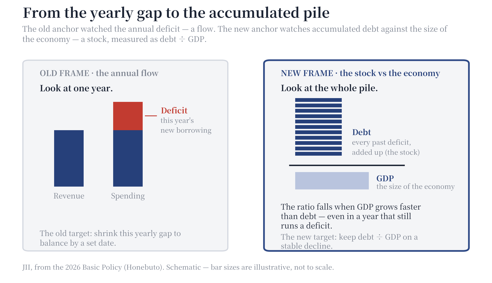
That anchor is highly sensitive to growth. In a downturn, tax revenue falls, welfare spending rises, debt increases, and nominal GDP stalls. The ratio can therefore deteriorate from both sides at once. The government’s published path assumes no recession, so its apparent fiscal headroom is thinner than the headline projections suggest.
The policy response is sequencing: invest first, consolidate later. The administration wants factories, infrastructure, networks, technology, and skilled labor in place before it raises taxes or cuts spending.
The objective is productive capacity, not temporary consumption. The state is targeting assets that could lift the volume of goods and services Japan can produce—and therefore the wages, profits, and tax receipts available to service the debt.
The government has identified 62 products and technologies across 17 fields. Working groups tabled the figures on June 24, 2026, and the cabinet adopted them on July 21, 2026. Together they map more than ¥370tn of combined public and private investment through FY03/41—about US$2.36tn at the ¥157 dollar rate of August 4, 2026. The figure is a roadmap, not an appropriation.
The words “more than” are the government’s own, and they carry weight. The Cabinet Office says it removed the overlaps between products before striking the total, that it left out the years beyond each product’s stated horizon, and that it expects the figure to rise as further products are added. So ¥370tn is a floor, and it was set low on purpose.
The published line items do not add up to that floor, and the government does not claim they do. Adding the 62 products together, counting once the two that are printed under two fields each — biopharmaceuticals and regenerative medicine at ¥20.8tn, and green steel at ¥4.2tn — gives ¥395.6tn. One component of that sum sits on a different basis: ¥0.34tn of the defense line is a single year’s budget figure for naval vessels, not a cumulative total to FY03/41, which is why the defense field reads ¥5.04tn rather than ¥4.7tn. The government publishes no field-level table and no reconciliation of the ¥26tn difference. Nomura published the same table with field subtotals that it labels reference values only, warning that products may overlap; those subtotals sum to ¥395tn.
The line items are also measured over different periods. Content runs to FY03/34, most of the digital line to FY03/36, disaster resilience to FY03/31, and the rest to FY03/41. Roughly a fifth of the total is therefore measured over a shorter window than the headline. Two fields carry components with no figure attached at all: shipbuilding excludes liquefied natural gas carriers, and defense excludes whatever follows the revision of the three national security documents.
Read each field’s figure as the weight the government places on that field. Do not add them together.
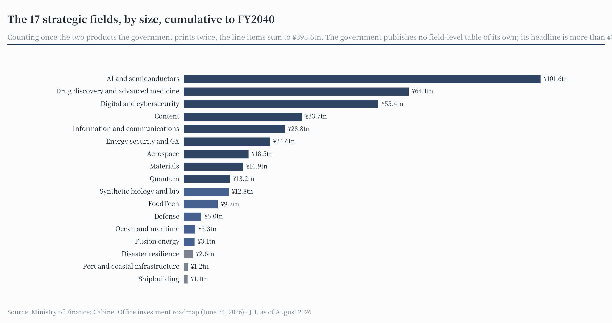
A roadmap entry gives a product a place in ministry planning; it does not fund a company. Semiconductor subsidies, GX funds, and defense programs have already cleared some legal and budgetary steps. Many other product lines still depend on budgets not yet drafted and corporate investment plans not yet committed.
The GX program shows the gap between ambition and public money. In 2023, the government framed GX as ¥150tn of ten-year investment, while the Diet authorized ¥20tn of transition bonds for the state’s contribution—roughly ¥1 of public funding for every ¥7.5 of stated investment. The ¥370tn roadmap uses the same public-plus-private construction.
The near-term pool is therefore the ¥21.3tn economic package the cabinet adopted in November 2025, funded by the ¥18.3tn supplementary budget the Diet passed in December 2025. That appropriated money can move into funds, tenders, and contracts, while the ¥2.7tn of tax measures inside the package cannot. The ¥370tn headline cannot—not without future appropriations and private commitments.
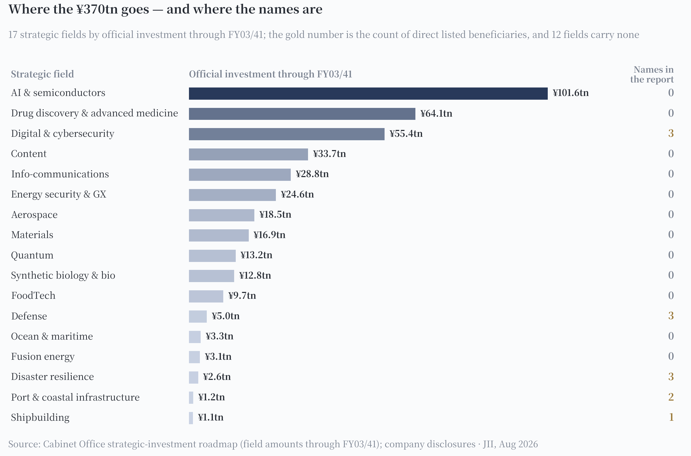
The strategic aim is domestic capability: semiconductor production, second-source suppliers, critical-material stockpiles, secure fuel and power, defense maintenance, stronger ports, and infrastructure that remains operational after disasters.
Once the state classifies a capability as essential, it must often pay to preserve it even when utilization is low. Maintenance, stockpiles, readiness, and redundant capacity can therefore create more durable demand than a conventional cyclical stimulus.
The constraint is funding cost. Japan already runs structural deficits and finances them through government bonds. Adding factories, depots, stockpiles, and ports means more issuance. The durability of the 17-field program ultimately depends on whether nominal growth and tax receipts rise faster than the interest cost of the debt used to support it.
The cost of funding the plan
Japan has run fiscal deficits for decades and funds the gap by issuing government bonds. The yield on those bonds is the price of financing the investment program—and the key variable that can narrow or widen the state’s room to spend.
That price has risen sharply. The 10-year Japanese government bond yield rose from 1.66% at the end of September 2025 to 2.690% on June 30, 2026, and then to 2.848% on August 4, 2026. The cycle high came earlier: the yield reached 2.866% on July 9, 2026, which was its highest close since May 1997. The long end moved with it. On August 4 the 30-year yield was 3.990% and the 40-year 3.962%; both had peaked on May 19, 2026 at 4.043%, the highest either has reached since its series began. All of this happened while the government prepared to add multi-year spending across 17 fields.
The Bank of Japan is buying fewer government bonds. Private investors must therefore absorb more issuance, and they may demand higher yields for doing so, particularly when borrowing rises before the promised growth appears in output or tax receipts.
No policy decision explains the move over these five weeks. The Bank of Japan raised its policy rate to around 1.0% on June 16, 2026, which is before the period begins. It then held that rate on July 31, 2026, with one of the nine board members voting to raise further. So the rate was already 1.0% on June 30 and was still 1.0% on August 4. The yield moved because the market repriced the debt, not because policy changed.
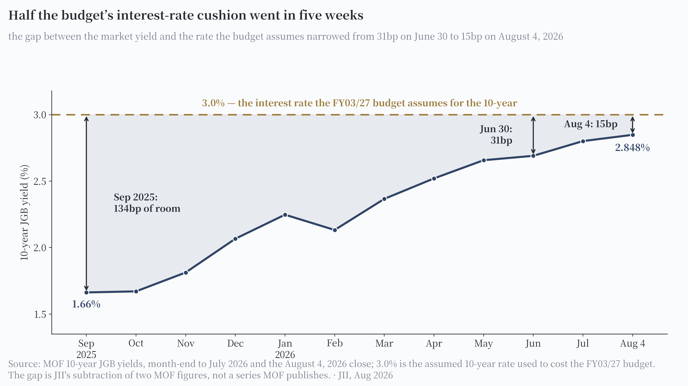
When the Ministry of Finance built the FY03/27 budget, it had to assume an interest rate in order to cost the debt-service line. It assumed 3.0% on the 10-year, and it set that figure deliberately above the market as a cushion. On June 30, 2026 the market yield was 2.690%, so 31 basis points of that cushion were unused. By August 4, 2026 the yield had reached 2.848% and the unused cushion had narrowed to 15 basis points. Half of it was consumed in five weeks.
That gap is a subtraction this report performs on two separate Ministry of Finance figures. The ministry publishes the assumed rate and it publishes the daily market yield. It does not publish the difference between them as a series, and it does not call it a margin.
Because the market yield is still below the rate the budget assumed, the FY03/27 debt-service line is not yet under pressure. The ministry publishes a sensitivity that models rates moving from FY03/28 onward, against an assumed path that already rises from 3.0% to 3.6% over four years. On that model a rise of one percentage point adds ¥0.8tn in FY03/28, ¥2.1tn in FY03/29 and ¥3.8tn in FY03/30. The cost compounds as the debt rolls over. Japan refinances its debt as bonds mature, so a higher yield reaches the interest bill gradually. What matters today is the speed at which the cushion is being used, not a breach that has already happened.
The investment program therefore has one central test: does it raise real productive capacity, or mainly raise prices?
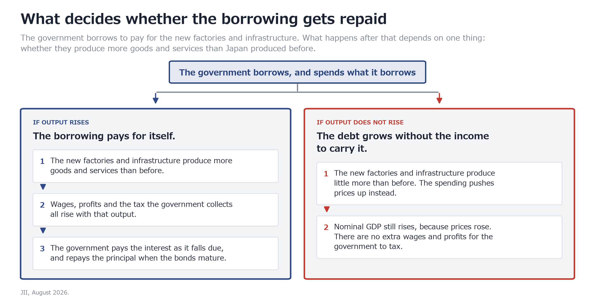
In the productive case, new capacity lifts output, wages, profits, and tax revenue. Yields may still rise as companies compete for capital, but the economy also generates more income to service the debt. Auction bid coverage, inflation expectations, and tax receipts help distinguish growth-driven yield increases from a loss of fiscal confidence.
In the weaker case, public spending lifts nominal GDP through inflation while real output barely changes. The debt ratio may initially look better, but the underlying tax base and debt-servicing capacity do not improve enough.
That outcome leaves three unattractive choices: raise taxes or cut spending and weaken demand; borrow more and increase the debt stock; or accept higher market yields and a rising interest bill as old debt is refinanced.
The government and the Bank of Japan can suppress yields. The central bank could resume larger purchases, while regulation can make government bonds especially economical for banks, insurers, and pension funds to hold.
Financial repression is not free. When deposit rates and bond yields remain below inflation, households and institutions lose purchasing power. Persistent losses can push savings into foreign currencies and assets, weakening the yen.
Higher yields do not cancel the ¥18.3tn already appropriated. They determine how much additional spending can be layered on in later budgets. The next question is how approved money moves from the state to a company’s income statement.
From policy headline to company sales
The cabinet adopted a ¥21.3tn package in November 2025, and in December 2025 the Diet passed the ¥18.3tn supplementary budget that funds most of it. Roughly ¥2.7tn of the package is tax measures, which are revenue forgone rather than money to be spent, so they cannot be tendered at all. The supplementary budget funds most but not all of the remainder, and no company receives the appropriated money directly. The revenue path begins each August, when ministries submit requests for the fiscal year starting the following April. A request is a claim on funding, not authority to spend.
The Diet must pass the annual budget before a ministry can spend. After appropriation, the ministry assigns delivery to a public body—a national agency, port authority, local government, or defense procurement arm—which defines the work and publishes a tender.
The winning main contractor books the contract and carries delivery risk. That visibility explains why large contractors rerate first. Most still buy components, materials, software, maintenance, and specialist engineering from suppliers further down the chain.
From ministry request to a supplier’s first delivery, the process usually takes 12–30 months. Share prices can move at the request or award stage, long before revenue is recognized. Policy exposure alone therefore says little about the eventual change in operating profit.
Cheap exposure is not enough. The case needs evidence that a tender exists, a customer has ordered, and the resulting revenue is large enough—and recurring enough through maintenance, consumables, or renewals—to move operating profit.
This is where small suppliers can offer more operating leverage than prime contractors. The same order is a much larger share of a small company’s profit base, while large-cap valuations may already discount the announced spending.
Inclusion depends on the strength of the connection
A company appears only when disclosure lets the reader trace a funded priority into its own revenue. The link is a public customer, an identified defense procurement chain, or a funded asset class that already represents a material share of sales.
Fields without that evidence are left empty. A low valuation, thematic similarity, or future possibility is not enough.
Twelve of the 17 fields carry no company. An empty field is a statement about the evidence this report could verify, not a judgment on the field.
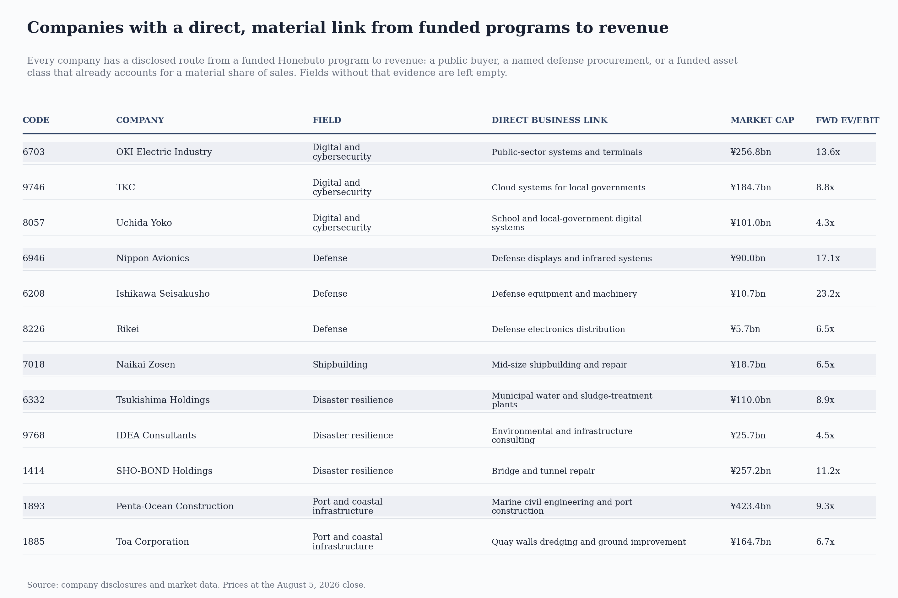
The route to revenue takes one of three forms: direct public procurement; a government contract that flows through a prime contractor to the supplier; or broad industry activity with no public buyer in the chain. The distinction determines both timing and confidence.
Which companies name their buyer, and which only name a segment
The twelve are not equally well evidenced, and the difference decides which three appear in the conclusion. It comes down to one question: does the company’s own filing name the public body that pays it, with a yen amount beside the name?
Seven do. Ishikawa Seisakusho names the Ministry of Defense at ¥9.65bn. Rikei names it at ¥11.08bn. Naikai Zosen names the Acquisition, Technology and Logistics Agency in a disclosed band. Penta-Ocean names the Ministry of Land, Infrastructure, Transport and Tourism at ¥119.4bn and the Ministry of Defense at ¥84.7bn. Toa names the transport ministry at ¥70.3bn. SHO-BOND names that ministry and the NEXCO expressway companies. IDEA Consultants publishes the share of its revenue coming from national and local government and names the ministries behind it.
Four disclose a public-facing segment but no public body. OKI Electric, TKC, Uchida Yoko and Tsukishima Holdings each report a segment whose customers are central or local government, and each segment is a material part of revenue. But no filing names a single buyer with an amount, so the size of any one relationship cannot be read from the disclosure.
One names no public body at all. Nippon Avionics sells to NEC, Sumisho Aero Systems and Fujitsu, the prime contractors and trading house that hold the ministry contracts. Government money reaches it, but at one remove and in an amount the filing does not show.
That ranking is the first of the conclusion’s three tests, and it removes five of the twelve before valuation is considered at all. Of the seven that remain, Ishikawa is the most expensive company in this report at 23.2x with net debt above its market value; SHO-BOND is the fourth most expensive of the twelve at 11.2x and cut its guidance in February 2026; Rikei guides operating profit down 40.2% and trades a median ¥45mn a day, which limits how much of it anyone can buy; and Naikai guides down 48.0%. The three that survive are IDEA Consultants, Penta-Ocean Construction and Toa Corporation.
One name deserves its own sentence, because it is the cheapest company in the report and it is not picked. Uchida Yoko trades at 4.3x, holds net cash worth a third of its market value, and is the only one of the digital names whose own commentary points at the funded programme. It fails the first test: its public revenue is disclosed as a segment, not as a named buyer with an amount. It also carries the weaker of the two guidance problems described below.
How to read the multiples
Every multiple in this report is enterprise value divided by operating profit. Enterprise value is the market value at the August 5, 2026 close, plus net debt or less net cash. Two inputs behind that are not uniform across the twelve companies, and both are worth stating.
The operating profit is each company’s own current guidance, not an estimate of ours. For ten of the twelve that guidance covers a fiscal year that is still running. For two it does not. SHO-BOND’s FY06/26 ended on June 30, 2026 and Uchida Yoko’s FY07/26 ended on July 20, 2026, and neither has reported yet. Their multiples therefore rest on guidance for a year that is already over, and actual results will replace that guidance within weeks.
Market value is the August 5, 2026 close multiplied by each company’s latest disclosed share count excluding treasury stock; where a company has bought back or cancelled stock since that disclosure, the count lags by that amount. The net cash or net debt comes from each company’s most recently published balance sheet. Those balance sheets are dated between March 31 and June 30, 2026, and they were published between May 8 and August 3, 2026, because these companies close their books on different calendars and report quarters at different times. Where a company has published a quarter since its last full year, the newer figure is the one used.
The twelve multiples run from 4.3x to 23.2x, with a median of 8.9x. The cheapest is Uchida Yoko at 4.3x and the most expensive Ishikawa Seisakusho at 23.2x, more than five times as much for the same measure. That spread is the comparison this report offers, and it is a narrow one: the report publishes no market-wide or sector-wide multiple, so a reader who wants to know whether 8.9x is cheap against the whole Tokyo market will have to bring that figure themselves.
What the report can show is which company is cheap against another doing the same work for the same buyer. Toa at 6.7x and Penta-Ocean at 9.3x are the clearest such pair. Both are marine civil engineering contractors, both name the same ministry as a customer, and the cheaper of the two is the one guiding profit down.
AI & Semiconductors
Japan remains a global leader in semiconductor equipment, not chip output. Equipment demand was accelerating before Honebuto; policy adds capacity to an existing upcycle.
The equipment cycle is already visible in reported sales. The Semiconductor Equipment Association of Japan (SEAJ) members generated ¥5,198.6bn of worldwide equipment revenue in FY03/26, up 9.0%. Its July 2, 2026 forecast rises to ¥6,550.2bn in FY03/27 and ¥7,771.8bn in FY03/29, a 14.3% CAGR. The near-term driver is practical: new fab buildings are reaching the stage at which previously ordered tools can be installed and recognized as revenue.
The chip-sales outlook is less clean. World Semiconductor Trade Statistics (WSTS) raised its CY2026 forecast from US$975.5bn in December 2025 to US$1,511.2bn in June 2026—more than US$530bn in six months. Memory accounts for roughly 80% of the forecast increase, with memory revenue projected to rise 249.5%. Much of that is price, not unit volume, so the headline revenue surge does not translate one-for-one into additional equipment demand.
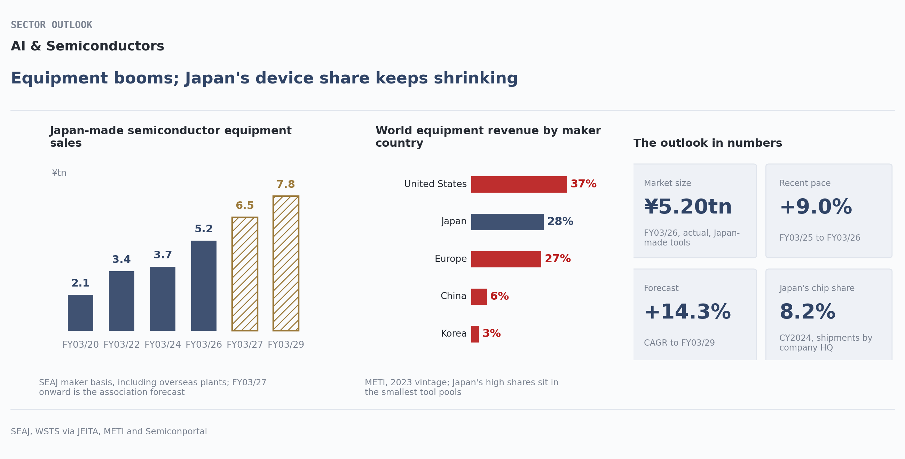
Four forces support capital spending. US hyperscalers are expanding data-center capex at roughly 70% a year by SEAJ’s estimate. AI servers require both high-bandwidth memory (HBM) and conventional dynamic random-access memory (DRAM), while HBM stacks are moving from 12 dies to 16 and 20, increasing wafer demand per finished part. Advanced-packaging capacity remains constrained. In Japan, spending is shifting toward 2nm logic and advanced DRAM even as automotive- and power-semiconductor fab investment softens.
The June 2026 roadmap assigns ¥101.6tn to AI and semiconductors through FY03/41: ¥68.0tn for embedded chips, ¥23.1tn for industry-specific AI, and ¥10.5tn for robotics. This is projected public and private capex, not controlled funding. The appropriated base is much smaller and predates the roadmap: annual semiconductor support rose from ¥774.0bn in FY03/22 to about ¥1.5tn in FY03/25 within a seven-year, ¥10tn framework approved in November 2024. Honebuto extends an upcycle; it did not create it.
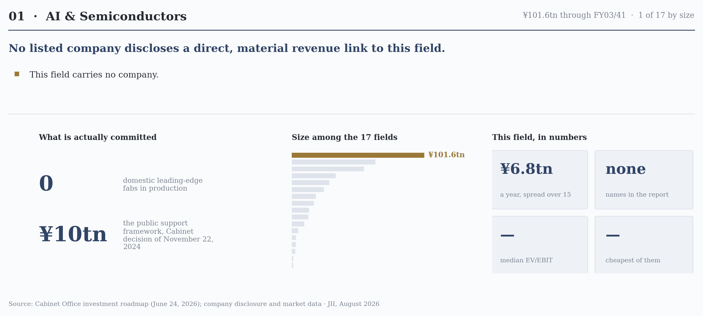
Two dated tests matter. The Ministry of Economy, Trade and Industry (METI)’s end-August FY03/28 budget request will show whether AI and semiconductor support receives new, separate funding lines. Rapidus’s trial-line yield through 2026–27 will show whether it can manufacture working chips at scale.
Digital & Cybersecurity
Japan’s IT market is growing, but foreign vendors own much of the software and cloud layer. Domestic firms capture the implementation work; the higher-value intellectual property often sits offshore.
The research firm International Data Corporation (IDC)'s market estimates show growth across adjacent services. IT services reached ¥7.02tn, up 7.4%; public-cloud spending rose 26.1% to ¥4.14tn; and security-software spending rose 14.6% to ¥586.1bn.
IDC forecasts the growth to continue through 2029: IT services at a 6.6% CAGR to about ¥9.6tn, public cloud at 16.3% to ¥8.82tn, and security software at 12.0% to ¥1.03tn. The margin question is more important than the revenue question. The Japan Information Technology Services Industry Association (JISA) members report ¥38.15mn of revenue per employee, but only ¥21.72mn after subcontracting; the subcontracted share of sales has risen from 20.99% in FY03/92 to 33.54% in FY03/25.
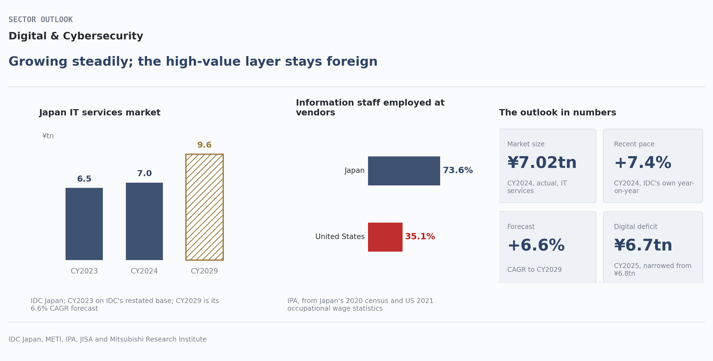
Three forces sustain demand. METI’s central estimate puts the 2030 engineer shortage at 450,000, supporting higher engineer-month billing rates. Roughly 80% of companies still run legacy systems, while local governments must migrate to a common national standard. The active cyber-defense law, promulgated May 23, 2025, brings most provisions into force by November 23, 2026, creating a dated compliance requirement for power, water, transport, and communications operators.
Japan’s market structure inflates service revenue without creating domestic software ownership. Outside vendors employ 73.6% of Japanese information-processing workers versus 35.1% in the United States. Foreign vendors hold more than half of the security market and invest far more heavily in R&D: METI compares foreign ratios of 31.6%, 29.0%, and 17.1% of sales with 2.4%, 0.6%, and 0.2% at selected Japanese peers. Japan’s deficit in software, cloud, and online advertising reached ¥6.7tn in CY2024.
The roadmap assigns ¥55.4tn to digital, on two different horizons. ¥42.0tn runs to FY03/36: ¥32.7tn for cloud, data centers, and batteries; ¥7.4tn for government platforms; ¥1.0tn for security; and ¥0.9tn for data platforms. The remaining ¥13.4tn runs to FY03/41: ¥8.2tn for autonomous driving and ¥5.2tn for medical digitization. The ¥32.7tn cloud line is mostly demand already under way and is likely to benefit the foreign providers the policy seeks to displace. More incremental public demand sits in the ¥13.6tn allocated to government platforms, medical digitization, and security.
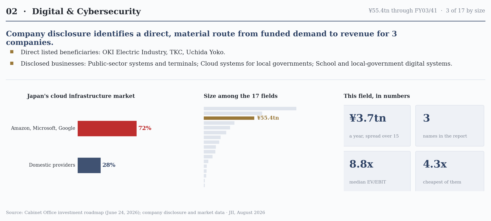
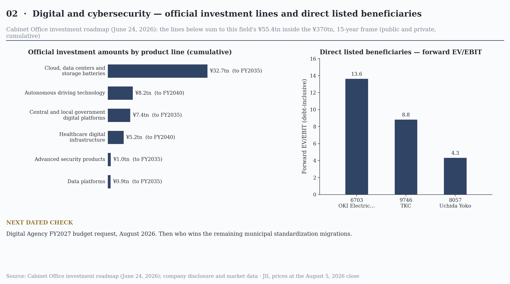
Watch three dated events: the Digital Agency’s FY03/28 budget request; the final local-government migration schedule; and whether the FY03/27 medical-fee revision reimburses digital services. In this field, the state is often the buyer, the deadline is public, and the contract path can be monitored.
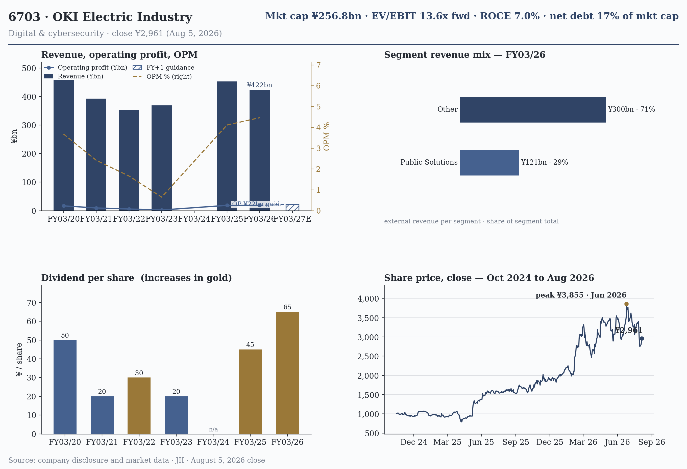
UPSIDE
- A third of group revenue already comes from a segment whose customers are central and local government.
- Group operating profit is guided to ¥22.0bn for FY03/27, up 16.7%.
- The same segment carries a second public buyer, because defense demand for underwater acoustics sits inside it.
RISKS
- The government-facing segment's own operating profit is guided down 11.3% for FY03/27.
- Net debt is ¥43.3bn.
- Large systems projects make results uneven between years.
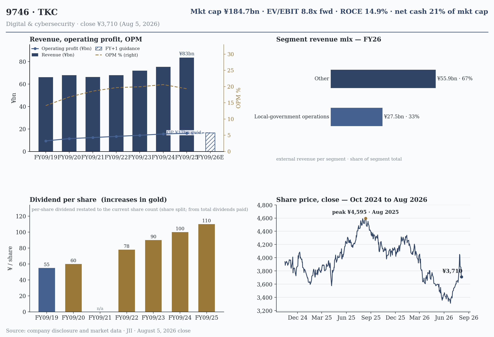
UPSIDE
- Roughly 1,150 municipalities are already customers, and municipalities are the only buyer this segment has.
- Net cash of ¥39.1bn is a fifth of market value.
- The accounting-firm segment grew operating profit 10.5% and does not depend on the government cycle.
RISKS
- The standardization deadline has passed, so the programme's spending has crested.
- FY09/26 guidance is 2.4% revenue growth and 2.8% operating profit growth, against 11.0% and 4.1% delivered.
- Standardized systems are easier for a municipality to switch away from.
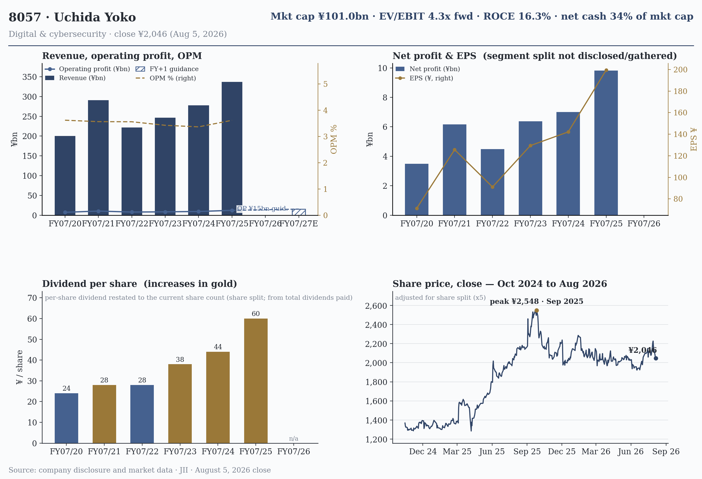
UPSIDE
- The company names municipal standardization and school-device replacement as its own demand drivers.
- Group operating profit rose 30.3% in FY07/25 to ¥12.2bn.
- Net cash covers a third of market value.
RISKS
- School-device replacement runs in cycles, and the current cycle will end.
- Hardware-heavy work carries lower margins than software.
- Much of the public revenue reaches government through resellers rather than directly.
Telecommunications
The sector contains two opposite cycles. Japan's information-and-communications value added rose 3.5% in CY2023. Telecom equipment is the stagnant part: the Communications and Information Network Association of Japan (CIAJ) forecasts demand of ¥4,693.8bn in FY03/26 and ¥5,130.7bn in FY03/31, a 1.7% CAGR. Domestic demand grows 1.9% a year; exports decline 0.7%.
Global radio-access-network revenue fell roughly 20% from 2022 to 2024, stabilized near US$35bn in CY2025, and is forecast by Dell’Oro to grow only 1% annually through 2030. Submarine cables are the opposite: TeleGeography expects about US$5bn of annual investment from 2026 to 2035 versus a historical average just above US$2bn, with more than US$16bn of systems entering service from 2026 to 2029.
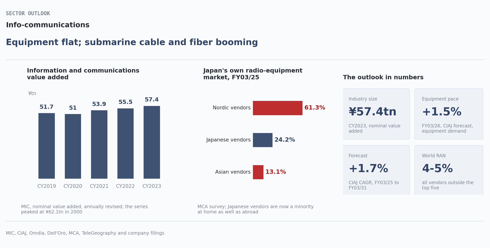
Japanese earnings already reflect the optical build-out. Fujikura’s information-and-telecommunications segment increased FY03/26 revenue 44.7% to ¥653.0bn and operating profit 65.7% to ¥152.7bn, a 23.4% margin. NEC won the Candle, AUG East, and I-2SEA cable systems and reported ¥23.0bn of submarine-cable revenue in the June 2026 quarter, up 52.3%. Carrier capex is also rotating from mobile radio equipment toward data centers; Nippon Telegraph and Telephone (NTT) has committed more than ¥1.5tn through FY03/28.
Radio equipment is now overwhelmingly foreign. Five vendors control 95–96% of the global market. NEC exited base-station hardware on January 29, 2026, took an ¥18.0bn restructuring charge, and retained software plus installed-base maintenance. Ericsson and Nokia captured 61.3% of Japan's FY03/25 radio-equipment market versus 24.2% for all Japanese vendors. Submarine cable is the exception: internal industry work identifies three companies able to deliver a complete system, including NEC.
The roadmap assigns ¥28.8tn through FY03/41: ¥20.5tn to next-generation wireless, ¥5.9tn to an all-photonics network, and ¥2.4tn to submarine cable. The largest line—wireless—has no binding law or appropriation and targets a market Japanese hardware vendors have largely exited. The most defensible line—submarine cable—is the smallest. Policy does not alter the underlying split between declining radio hardware and expanding optical infrastructure.
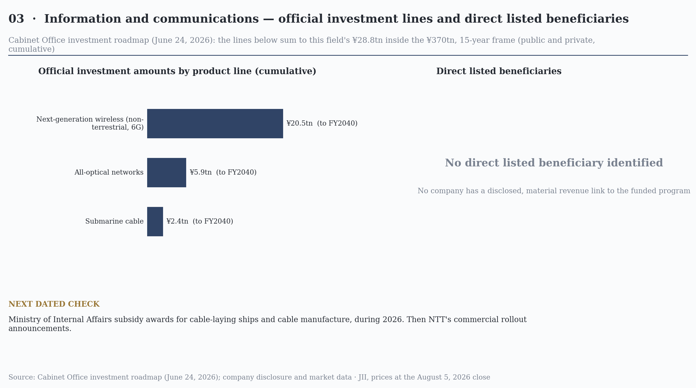
The relevant catalysts are the 2026 tenders for cable-laying ships and domestic cable capacity, NTT’s photonics deployment, and whether the wireless line survives the FY03/28 budget request. Japan has a strategic reason to control communications infrastructure, but few investable small-cap vehicles tied directly to the build-out.
Quantum
Japan has strong patents and weak commercialization. Government research funding is growing faster than customer revenue, and no listed company discloses enough quantum sales to support a valuation case.
Japan’s quantum market is still best measured by public budgets, not company revenue. Government spending was about ¥80bn in FY03/24, ¥100.3bn in FY03/25, and at least ¥136bn in FY03/26. The FY03/26 total combined a ¥36.1bn initial budget with a ¥100.4bn supplementary package for METI’s industrialization program. Initial budgets actually declined from ¥42.1bn to ¥36.8bn to ¥36.1bn, so all recent growth came from one-year supplementary appropriations that may not recur.
The global commercial base is barely larger. The Quantum Economic Development Consortium (QED-C) puts CY2025 quantum revenue at US$1.9bn—US$1.4bn from computing and roughly US$470mn from sensing—with growth near 30%.
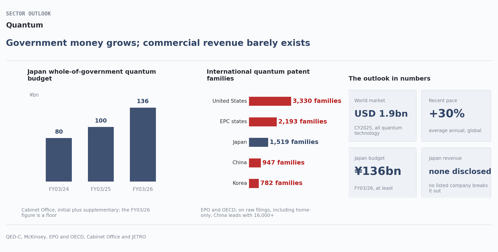
Three demand drivers matter. Government budgets remain dominant. Post-quantum cryptography has the clearest deadline: US Executive Order 14412 requires federal agencies to migrate key establishment by December 31, 2030 and digital signatures by December 31, 2031. Hardware scale remains distant: Google’s path to a useful machine requires about one million physical qubits, versus 256 on the system built by the national research institute RIKEN with Fujitsu unveiled in April 2025.
Japan’s strength is intellectual property. A study by the European Patent Office (EPO) and the Organisation for Economic Co-operation and Development published December 17, 2025 ranks it second in international patent families, behind the United States. Its weakness is industrial scale: lasers, cryogenics, control electronics, and integrated systems. No Japanese company builds a complete quantum computer with hardware and control software, and none operates a major cloud-access service for quantum machines.
The roadmap assigns ¥13.2tn through FY03/41: ¥10.3tn to computing, ¥1.5tn to communications and networks, and ¥1.4tn to sensing. No law requires that spending, and the program depends on strategy documents that can change during annual budget negotiations.
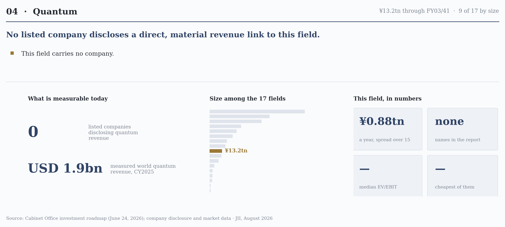
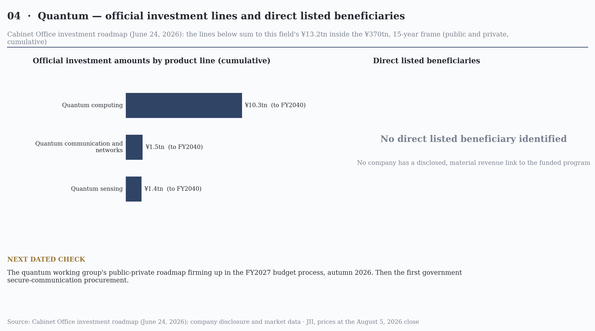
The first procurement of secure quantum communications would change the analysis. A research grant is a cost reimbursement; a procurement order creates revenue and operating profit. Until a customer contract appears, quantum remains a funded research theme rather than a listed earnings theme.
Defense
Japan's defense budget is still rising, while new contract authorization peaked in FY03/25. Contracted maintenance and electronics backlog provide clearer visibility than a further change in the budget growth rate.
The budget has surged, but the rate of increase is fading. Defense-related spending rose from ¥5,400.5bn in FY03/23 to ¥9,035.3bn in FY03/27. Annual growth slowed from 26.3% to 16.5%, 9.4%, and 3.8%.
New contract authorization is the more useful leading indicator because it records work the ministry can sign now and pay for later. On the five-year-plan measure, authorization peaked at ¥9,362.5bn in FY03/25, fell 9.9% to ¥8,433.2bn in FY03/26, and fell another 2.0% to ¥8,260.7bn in FY03/27. The broader series fell 9.2% and then recovered only 0.6% to ¥8,845.9bn. Cash outlays are rising against an order pipeline that is no longer expanding.
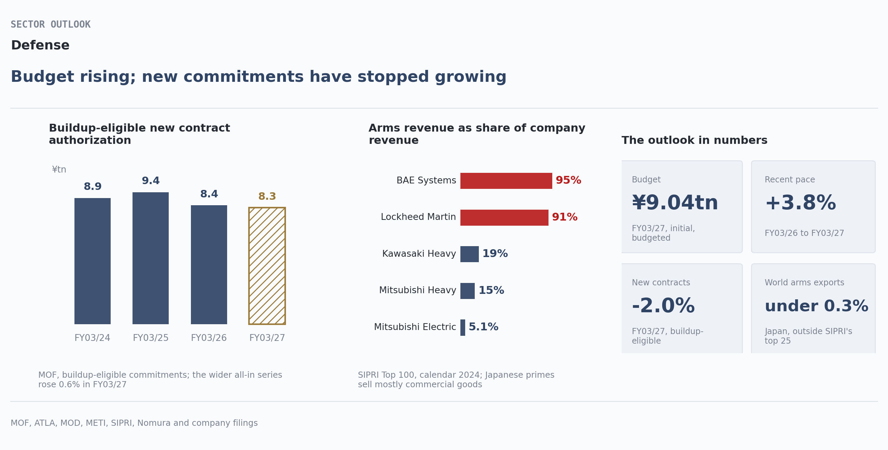
Demand is concentrated in standoff missiles, ammunition, and maintenance. Standoff missiles received about ¥939.0bn in FY03/26, favoring a small number of prime contractors. Ammunition receives ¥907.5bn in FY03/27. Maintenance is the more durable supplier opportunity: commitments across the five-year plan rose from about ¥4tn to about ¥9tn, measured when contracts are signed.
Japan exports little defense equipment and remains below the 0.3% global share held by the 25th-ranked exporter in the rankings of the Stockholm International Peace Research Institute (SIPRI). Defense is also a minority business inside every Japanese prime, while more than 100 companies reportedly left the supplier base over two decades. Capacity preservation—not export growth—is the core policy problem.
The relevant commitment is not the roadmap’s ¥5.04tn defense line. It is the ¥43.5tn FY03/24–FY03/28 buildup plan, 2.5x the prior plan, with roughly ¥1.8tn a year allocated to maintenance on a contract basis. Since October 2023, the production-base law has allowed the state to buy machinery for small suppliers that cannot finance capacity themselves. Honebuto 2026 sets no new GDP target and leaves the next plan to a bottom-up equipment review.
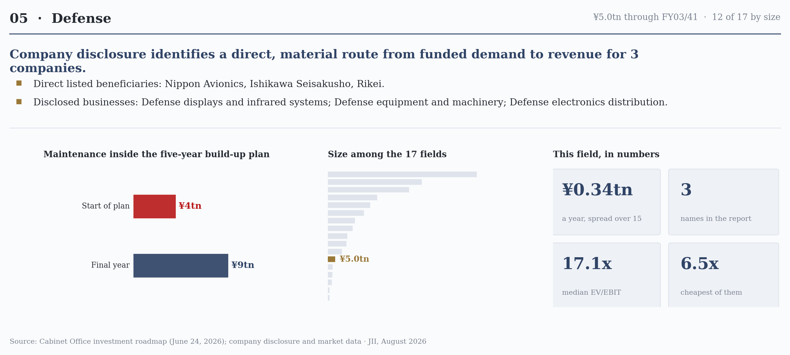
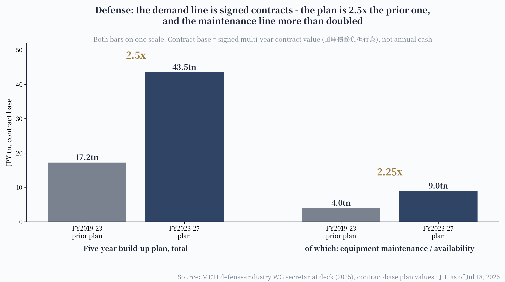
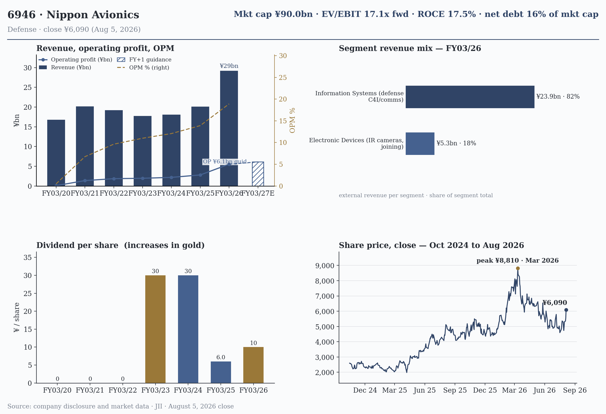
UPSIDE
- Operating profit is guided up 10.6% to ¥6.1bn, and the segment's backlog covers more than a year of its sales.
- Segment orders of ¥33.3bn exceeded segment revenue, and segment backlog rose 46.5% to ¥29.7bn.
- The company attributes the growth to a high defense budget in its own words.
RISKS
- No public body is named as a customer, so the size of the government link cannot be read from the filing.
- Forward EV/EBIT of 17.1x is the second-highest in this report.
- Three customers supply two-thirds of revenue.
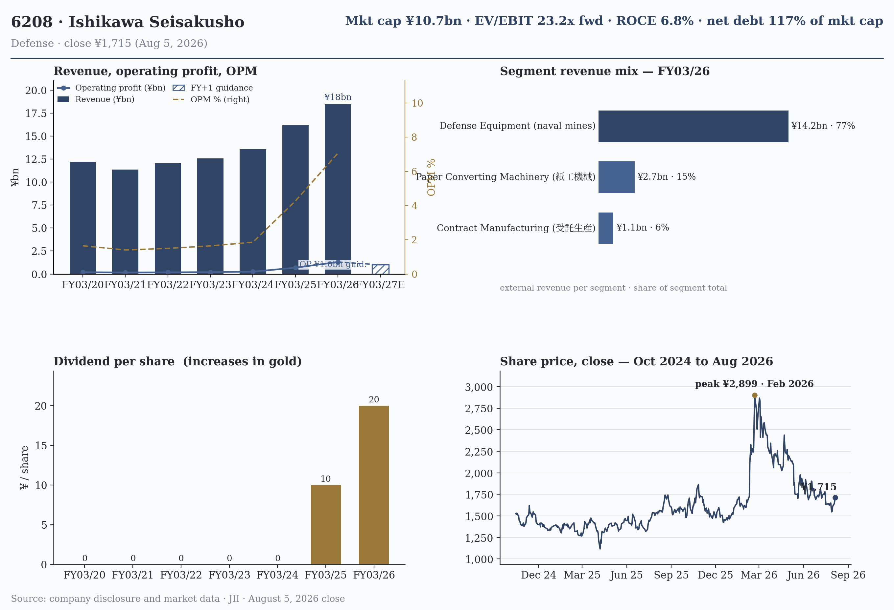
UPSIDE
- More than half of revenue comes from a single named ministry.
- Group revenue rose 14.0% in FY03/26, and the defense segment within it rose 27.9%.
- The company is one of a small number of domestic naval-mine suppliers.
RISKS
- Group orders fell 35.5% in FY03/26 to ¥13.74bn, below group revenue of ¥18.47bn, so the year was worked out of backlog.
- FY03/27 operating profit is guided down 23.5% to ¥1.0bn.
- Net debt exceeds market value.
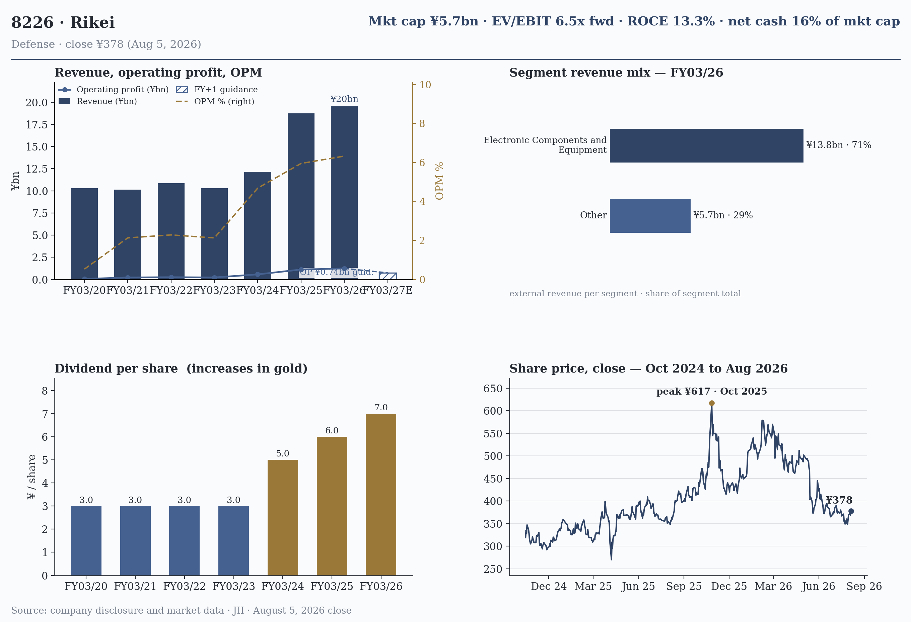
UPSIDE
- No other company here draws so large a share from one named ministry.
- Public money arrives through three separate segments rather than one.
- The company names the ministry's satellite constellation programme as a forward driver.
RISKS
- FY03/27 operating profit is guided down 40.2% to ¥0.74bn, because the engine repair contract normalizes.
- Engine repair deliveries are large and land unevenly between years.
- At ¥5.7bn of market value and thin turnover, position size is limited.
Aerospace
Japanese aerospace output is above its pre-pandemic peak, but most of the rise is recovery. Domestic companies remain suppliers to foreign aircraft and engine programs rather than owners of complete platforms.
The Society of Japanese Aerospace Companies measures production value across 25 manufacturers. Output fell to ¥959.2bn in FY03/22 and recovered to ¥1,986.7bn in FY03/25. METI counts a broader set of producers and publishes its own series. METI’s production statistics, published May 19, 2026, put FY03/26 at a record ¥2,471.5bn, 19.9% above METI’s own FY03/25 level.
The recovery ran near 28% a year for three years, but much of it simply closes the pandemic gap. The broader METI series had grown about 2.5% annually before 2020, and a continuation of that trend would place the industry near today’s level. The Cabinet Office’s target to double the space market from ¥4.0tn to ¥8.0tn uses a broad definition; the equipment market occupied by Japanese manufacturers is only ¥350bn–¥600bn. Aircraft orders are forecast to fall 17.4% even as production rises because factories are delivering work ordered earlier.
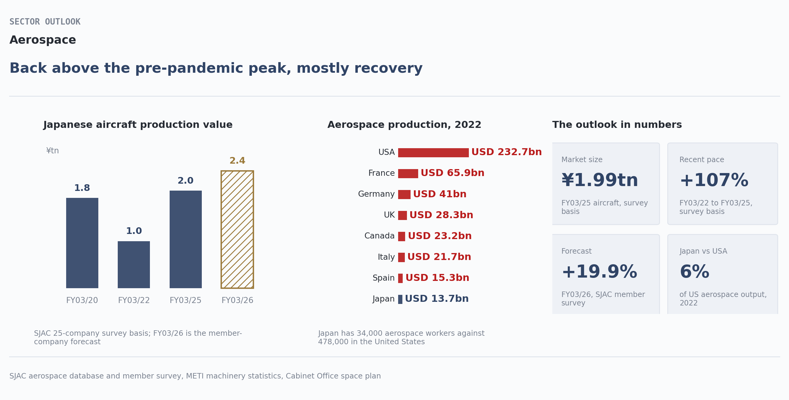
Three demand sources matter. The 2022 defense plan funds P-1 patrol aircraft, C-2 transports, and the US-2 through FY03/28. Boeing’s monthly build rates drive Japanese component volumes because domestic suppliers make 35% of the 787 structure and 21% of the 777. The roughly ¥1tn Space Strategy Fund matters because public buyers account for 68% of Japan’s space market.
The roadmap assigns ¥18.5tn through FY03/41: ¥6.4tn to satellites and services, ¥5.6tn to lunar and low-orbit technology, ¥3.5tn to civil aircraft, ¥2.3tn to rockets and launch sites, and ¥0.7tn to flying cars and drones. Most is a 14-year projection. The appropriated base is the Space Strategy Fund, paid in installments through supplementary budgets against a ten-year ambition of about ¥1tn.
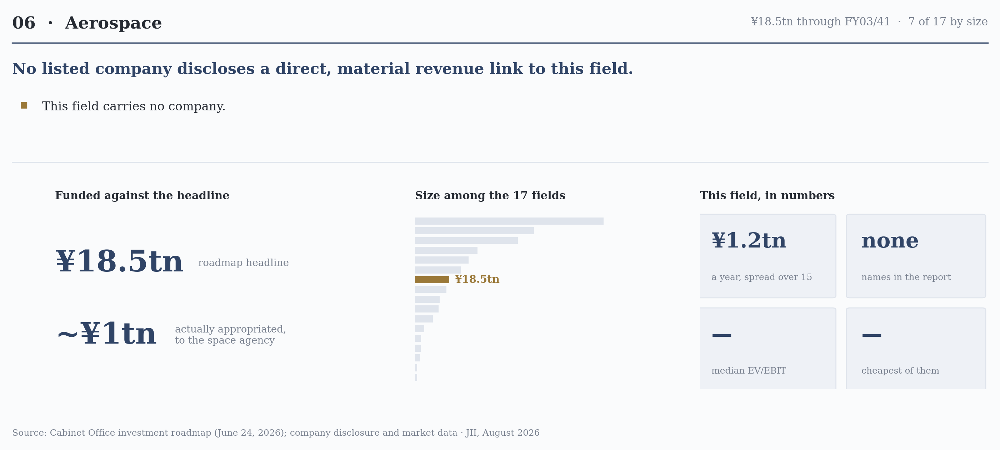
Development grants fund R&D but do not create recurring customer revenue. The stronger commercial instrument is anchor tenancy: the state commits in advance to buy launch capacity or satellite data, creating contracted revenue against which a developer can finance construction. Few listed small caps hold such contracts.
This report names no company in this field. No listed company was found whose own disclosure shows a direct and material revenue link to the funded aerospace programme.
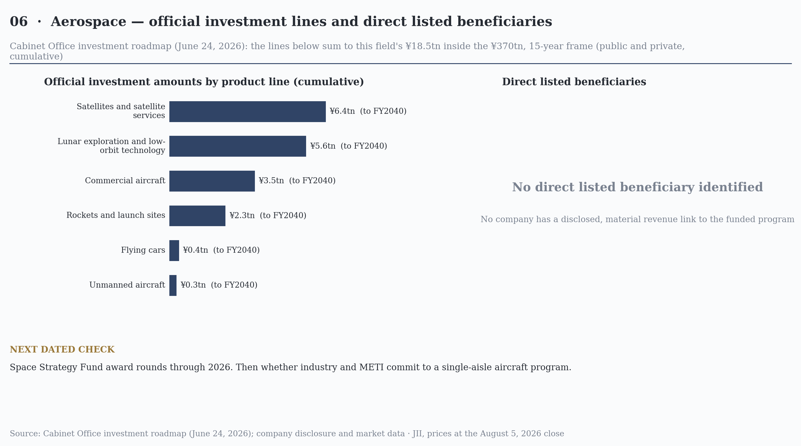
Ocean & Maritime
Japan's ocean economy stagnated while the global market doubled. A public customer is essential; disclosed orders, rather than the roadmap total, determine listed revenue.
Japan’s ocean economy was flat from 1995 to 2020 while the global market doubled. That long divergence is the starting point for the government’s attempt to rebuild domestic capability.
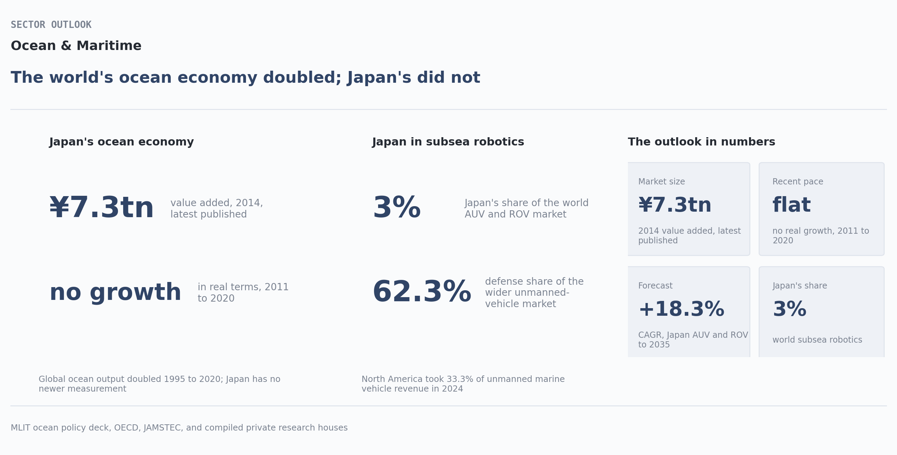
Defense supplied 62.3% of unmanned-marine-vehicle revenue in 2024. Offshore wind could create survey and inspection demand, but the Mitsubishi-led consortium withdrew from all three first-round sea areas in August 2025 after construction costs exceeded bid assumptions. Rare-earth mud was first lifted off Minamitorishima on February 1, 2026; a February 2027 test targets sustained recovery of 350 tonnes a day. Four MEGURI2040 vessels had level-four-equivalent commercial certification by March 2026.
Japan lacks the industry’s historical anchor customer. Offshore oil and gas accounted for at least 44.6% of global remotely operated vehicle demand in 2023, but Japan has no meaningful offshore production. Domestic suppliers therefore developed against a home market worth only about 3% of world demand.
The roadmap assigns ¥3.3tn through FY03/41: ¥1.2tn to ocean drones, ¥1.2tn to maritime-domain awareness, and ¥0.9tn to seabed technology. The drone line averages about ¥80bn a year—more than the estimated ¥23.1bn Japanese market in 2024. Honebuto also points to an Arctic research vessel, a successor to Shirase, and a deep-sea mother ship. Public procurement is therefore not a supplement; it is the market maker.
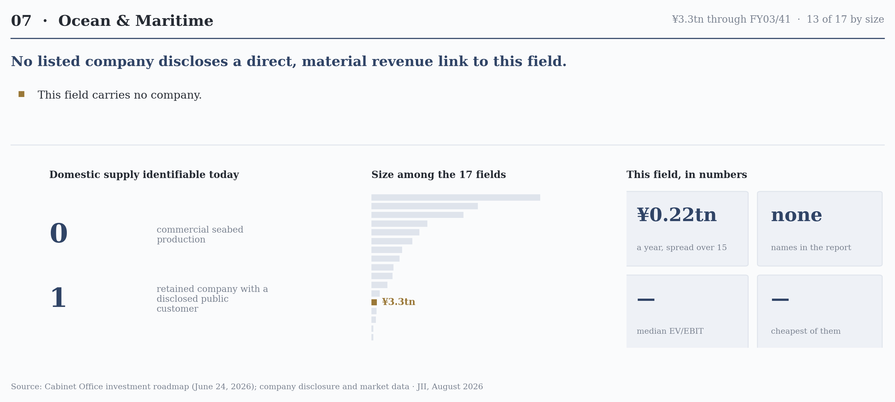
Supplier economics improve only when one design produces repeat vessel orders or a survey contract spans several years. Up-front engineering costs need multiple builds to earn an adequate return. Survey contractors and instrumentation providers are the listed participants closest to recurring operating profit, because ministries re-tender those services every year.
This report names no company in this field. The survey work that ministries buy is ground and site investigation for facilities on land, which is a different business from seabed and maritime-domain work, so it does not evidence a link to this programme.
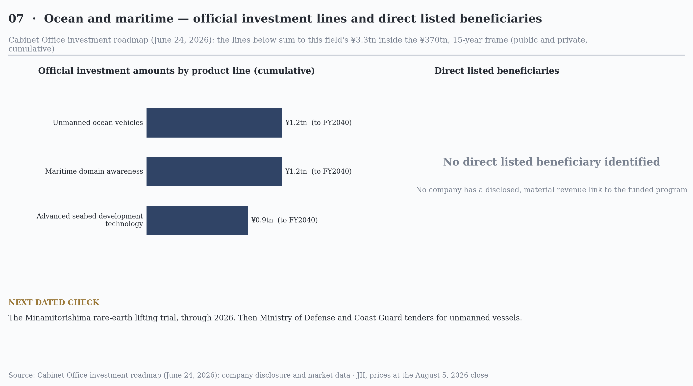
Shipbuilding
Japanese shipbuilding generates about ¥3.0tn of annual revenue, but capacity has contracted. Completions fell 44% from 16.0mn gross tons in 2019 to 9.0mn in 2024. Domestic yards now build fewer ships than Japanese owners order, forcing part of that demand to foreign yards.
The demand outlook is stronger than the domestic supply outlook. The Shipbuilders’ Association of Japan, Clarksons, and the Organisation for Economic Co-operation and Development (OECD) each estimate global annual newbuild requirements of 80mn to more than 100mn gross tons by 2035. The Ministry of Land, Infrastructure, Transport and Tourism (MLIT)’s no-policy base case still shows Japan losing volume and share.
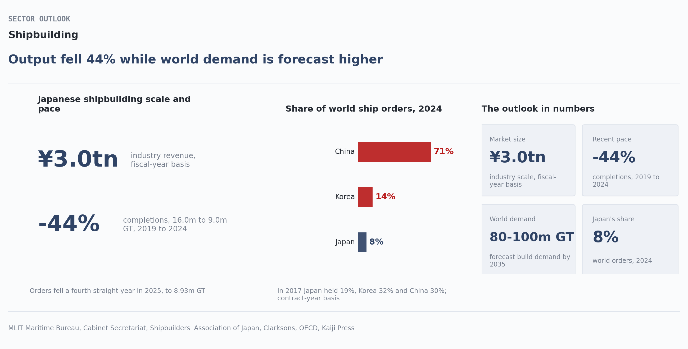
Fuel transition is the potential inflection. The International Maritime Organization (IMO) rules are expected to make conventional fuel oil less economic, pushing owners toward liquefied natural gas (LNG), methanol, ammonia, or hydrogen. Japan’s proposition is lifecycle cost: a more efficient but more expensive hull can cost less over its operating life through lower fuel use.
Cost and capacity remain structural disadvantages. Japan’s order share fell from 19% in 2017 to 8% in 2024 as China’s rose from 30% to 71%. On MLIT’s index, a Japanese 40,000-dwt bulk carrier costs 100 versus 81 in China—23.5% more; steel explains about 14 points of the 19-point gap and other materials eight, while labor runs three points in Japan’s favor. Expansion is slow: a 1,200-tonne goliath crane costs about ¥9bn and takes more than seven years to deliver. Japan retains one protected market—100% of defense-ministry and coast-guard vessels are built and repaired domestically.
The roadmap assigns ¥1.1tn: ¥1.0tn for next-generation vessels through FY03/35 and ¥0.1tn for repair through FY03/36. Ship hulls are now a Specified Critical Material, allowing public funding for equipment inside private yards. A ¥120bn FY03/26 supplementary appropriation opened a ¥350bn ten-year revival fund. At roughly ¥35bn a year, the fund equals only 1–2% of industry revenue and cannot drive earnings by itself.
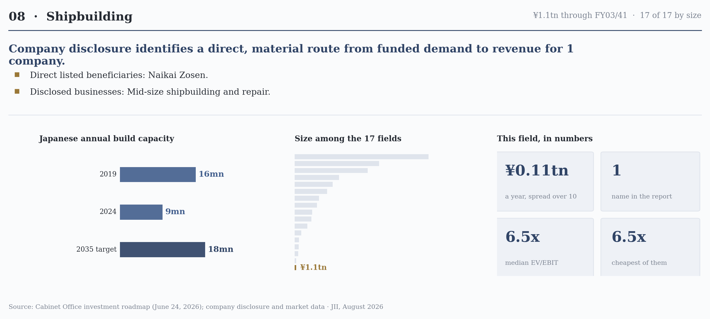
Public money reaches yards through hull orders or capacity investment. Revenue from a vessel is recognized as construction progresses; grants for docks, cranes, and automation raise potential throughput. The binding constraint today is labor-hours in existing docks. Trade reporting indicates yards failed to meet even 2025’s low completion volumes because they lacked workers. Orders without capacity do not become deliveries.
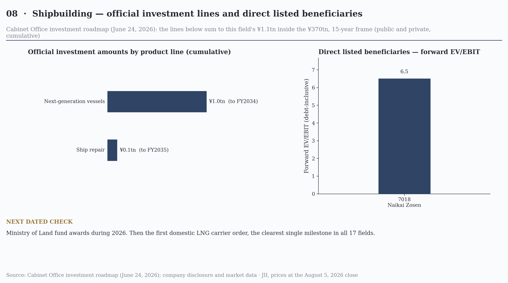
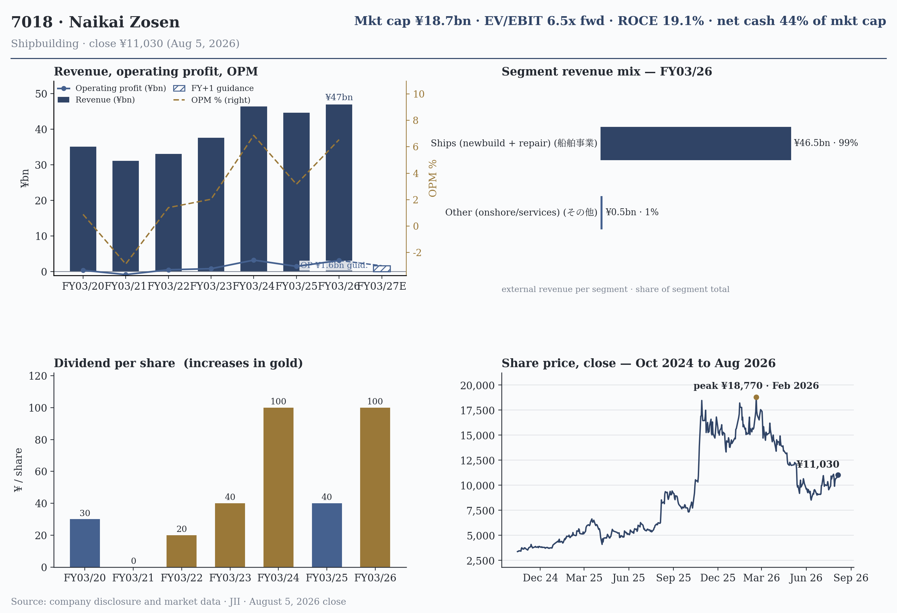
UPSIDE
- Order intake reached ¥80.3bn in FY03/26, up 67.4%, covering nine newbuilds including transport ships, plus repair work.
- Backlog rose 33.7% to ¥134.3bn, close to three years of revenue.
- Net cash is 44% of market value.
RISKS
- FY03/27 operating profit is guided down 48.0% to ¥1.6bn.
- The disclosed agency band fell from 10%–30% in FY03/25 to 10%–20% in FY03/26.
- A few vessels determine each year's result, and input costs can move after a contract is signed.
Materials
Japan is losing share in commodity materials but remains strong in high-performance niches. Supply-security certification can identify a beneficiary, plant, and date, but no listed small-cap beneficiary has yet been named.
METI’s materials and components bloc—chemicals, paper and pulp, selected ceramics, steel, and non-ferrous metals—shipped ¥103tn and generated ¥30tn of value added in 2024. That is more than one-quarter of the ¥110tn generated by all Japanese manufacturing. As of February 19, 2026, METI still had not set a market-size forecast or target share.
Commodity share has declined for 15 years. Crude-steel output fell 23% from 109.6mn tonnes in 2010 to 84.0mn in 2024, reducing Japan’s global share from 8% to 5% as China rose from 44% to 53%. Japan produced about 15% of global neodymium magnets in 2020, and METI projected a fall below 10% by 2025. The International Energy Agency (IEA) expects clean-energy rare-earth demand to grow about 5.9% a year through 2040.
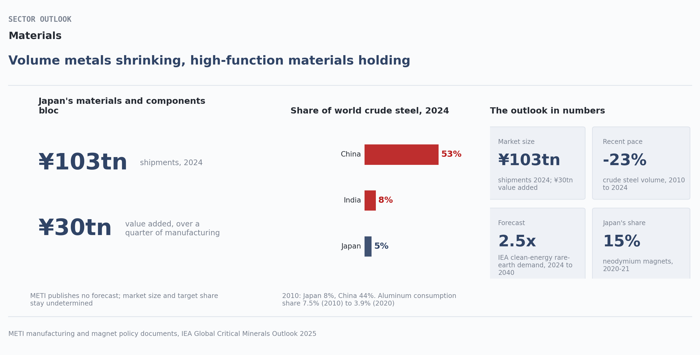
Electric vehicles drive much of the demand: automotive applications consume 43% of permanent magnets made in Japan. Supply security has worsened as China expanded export licensing from gallium and germanium in August 2023 to seven heavy rare earths in April 2025. China’s share of Japan’s total rare-earth imports fell from 89.8% in 2010 to 62.9% in 2024, but the heavy-rare-earth share remains 100%.
The strategic choke point is processing, not mining. China integrates extraction, separation, refining, smelting, alloying, and magnet production. Rare-earth inputs are more than half the cost of a magnet, giving integrated producers a structural cost advantage. Japan enters the chain mainly at electrolytic refining and excels in the finished magnet. The United States is responding with equity support, a ten-year price floor, committed purchases, and a US$2bn defense stockpile. In specialized materials, Japan remains strong: Shin-Etsu and SUMCO together hold 54% of global silicon wafers.
The roadmap assigns ¥16.9tn through FY03/41: ¥6.3tn to smelting, separation, refining, and dismantling; ¥5.2tn to AI-designed composites; and ¥4.2tn to hydrogen-based green steel, among other lines. Almost none is appropriated. The 2022 economic-security law designates critical minerals and magnets as Specified Critical Materials, allowing the state to fund equipment at a named private plant.
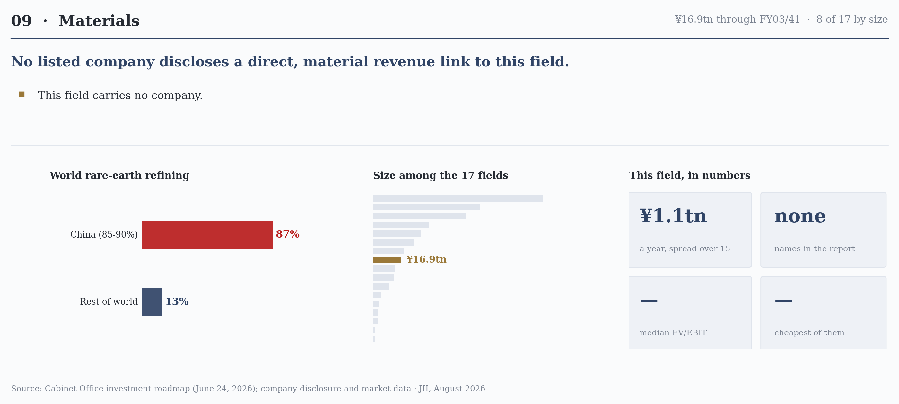
Certification is the investable event because it identifies one company, one plant, and one date. Equipment orders follow later, creating a window between award and supplier revenue. METI had certified 135 supply-security plans by October 29, 2025, and the named recipients include Shin-Etsu Chemical (4063) and Daido Steel (5471), but no completed round has produced a listed small-cap beneficiary.
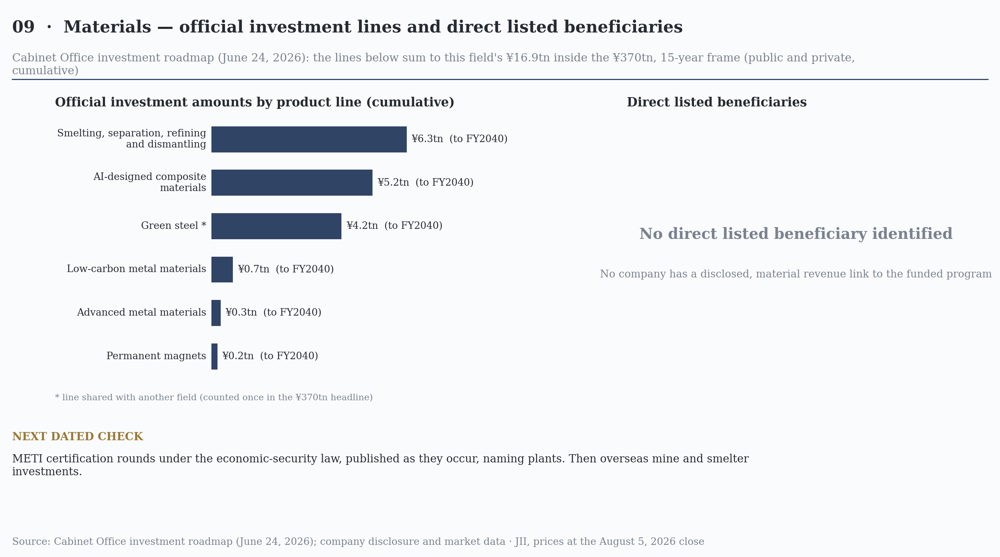
This report therefore carries no name in the field. The view changes when a certification round names a listed processor and facility, or when the government buys refined rare-earth material for a national stockpile at a published price. Either event would make the policy’s economics auditable.
Synthetic Biology & Biomanufacturing
Japan has deep fermentation expertise but limited commercial-scale biomanufacturing capacity. Recorded market growth is modest; government projections assume an industry far larger than today’s economics support.
The measured market is growing slowly. Japan’s broad bio-related industries recorded ¥6.912tn of sales in 2024, up 1.4%, with ¥7.281tn estimated for 2025, up 5.3%. Biopharmaceuticals are forecast to grow 9.6% annually versus 5.5% for conventional drugs. A separate, opaque forecast places biomanufacturing at ¥46.2tn by 2030 and ¥114.8tn by 2040, combining domestic and overseas activity without publishing the assumptions.
METI itself identifies the economic gap. Biomanufacturing is likely to spread first into a limited set of high-value products, not bulk fuels or basic chemicals, because biological production currently costs more than conventional methods. The ministry’s realistic near-term targets are cosmetics, fragrances, and functional materials. Its engineering goal is still only to narrow biological production cost to about 1.2x the conventional process. Several high-profile US platform companies have already failed.
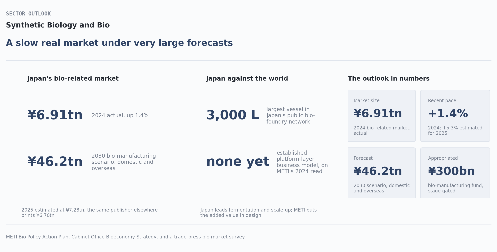
Japan’s strength is wet biology: hydrogen-oxidizing bacteria, industrial fermentation, and a large maintained library of microbial strains. Its weakness is the software and data layer—DNA design, genome mining, and machine learning—where more of the value is captured. Scale is also missing. Public facilities top out at a 3,000-liter fermenter, below the 10,000-liter-plus capacity generally needed for commercial economics, and developers already report insufficient access.
The roadmap assigns ¥12.8tn to biomanufacturing through FY03/41 and another ¥20.8tn to biopharmaceuticals and regenerative medicine in the adjacent healthcare field. The appropriated base is much smaller: the national biomanufacturing fund is about ¥300bn and releases tranches only after technical stage gates. That is roughly ¥1 appropriated for every ¥42 projected.
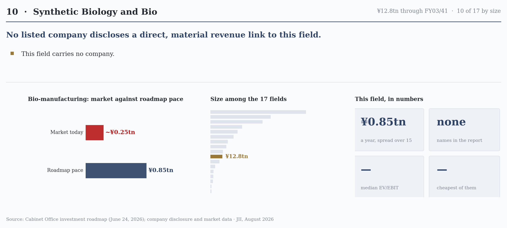
Public funding reaches listed earnings only when a plant is commissioned. A developer clears stage gates, builds a biofoundry, grows engineered organisms in fermentation broth, and then buys equipment to separate, crystallize, filter, and dry the product. Machinery and feedstock suppliers are paid before the developer has commercial product revenue.
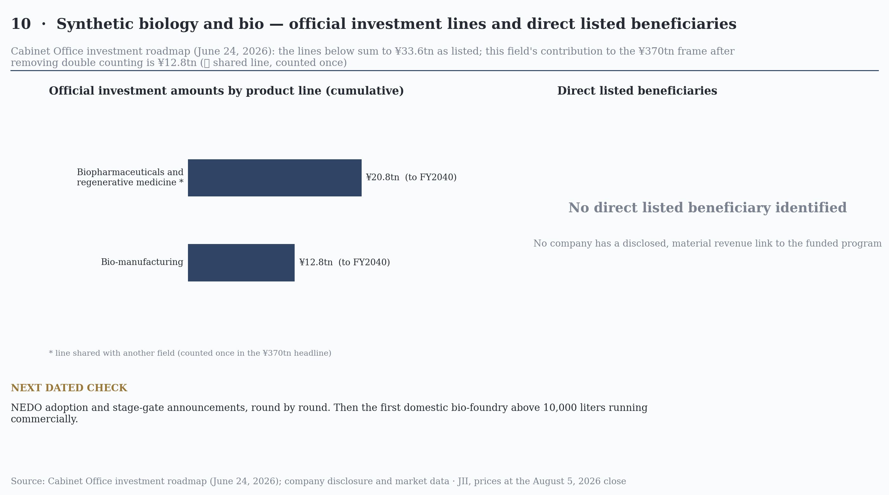
Watch stage-gate approvals, the first domestic biofoundry above 10,000 liters, and any designation of fermentation inputs as Specified Critical Materials.
Drug Discovery & Advanced Medicine
Japan’s drug market is growing slowly while price revisions compress revenue. This report identifies no company with a direct, material revenue link to the funded program.
The healthcare data firm IQVIA forecasts Japan’s prescription-drug market growing 1.2% annually from ¥11.216tn in FY03/26 to ¥11.899tn in FY03/31, down from its prior 1.4% estimate. New products are expected to add ¥1.566tn, while scheduled price resets remove more than ¥3tn; higher prescription volume closes most of the gap.
Price policy is the main constraint. Japan effectively resets drug prices every year, with IQVIA modeling cuts of 3.8–3.9% in interim years and 4.7–6.2% in regular revisions. Volume grows against that headwind, while generic substitution accelerates. Since October 2024, patients choosing long-listed branded drugs pay part of the price difference themselves; generic unit share is forecast to reach 91.9% by March 2031. Global manufacturers are also pressing for higher Japanese prices because low prices in Japan can reduce US reimbursement under international reference-pricing proposals.
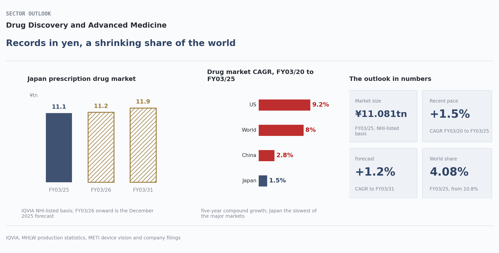
The global-share decline is persistent. Japan fell from 10.8% of the world drug market in FY03/10 to 5.6% in FY03/20 and 4.08% in FY03/25; IQVIA forecasts 3.1% by FY03/30. Medical devices show the same pattern: global share fell from 22.1% in 1990 to 7.3% in 2018. CY2024 domestic device production was ¥2.664tn, down 0.4%, versus ¥3.454tn of imports.
The roadmap assigns ¥64.1tn through FY03/41, but the policy is internally conflicted. The revised pharmaceutical law, phased in from late 2025, supports domestic production of ventilators, plasma products, and biosimilars. The social-security program pushes the other way through biosimilar substitution, higher elderly co-payments, and the FY03/28 price revision. Innovation funding reaches earnings slowly through approval and prescribing; a reimbursement cut hits the full listed price on a scheduled date.
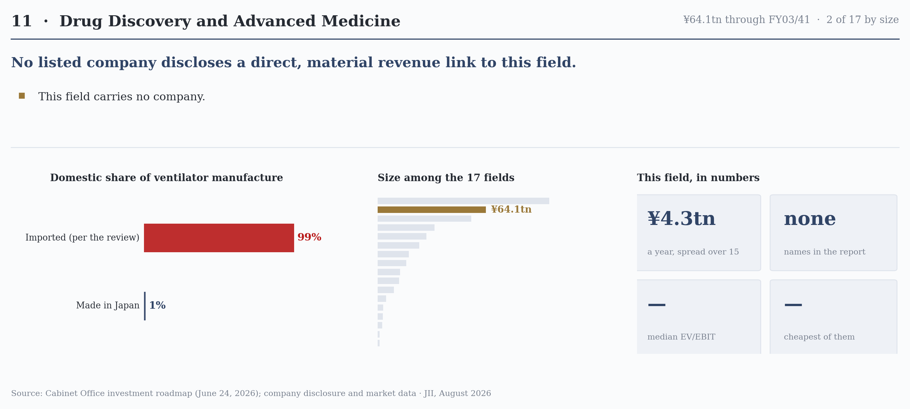
The decisive change would be a written exemption that shields a specific drug from the FY03/28 price cut. In devices, a Japanese company winning the world's first approval for a new product would provide a comparable catalyst. Until then, domestic production of ¥2.664tn remains below imports of ¥3.454tn.
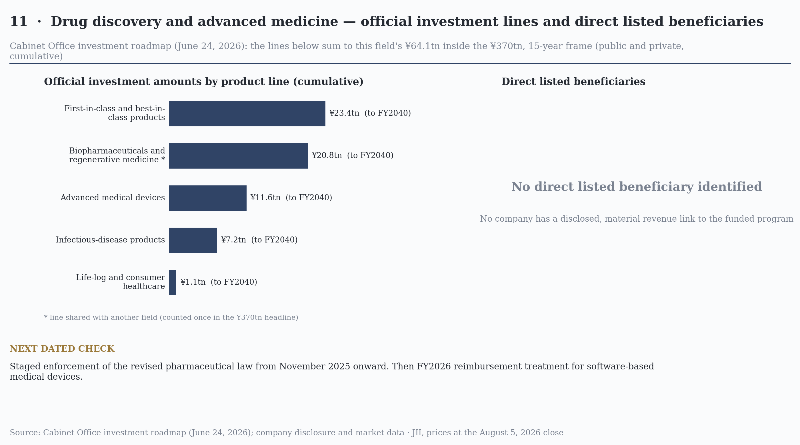
Energy Security & GX
Electricity demand is rising after two decades of decline, and equipment backlogs already reflect new construction. No retained company discloses a direct, material revenue link to a funded program in this field.
Japan’s electricity cycle has turned. The Organization for Cross-regional Coordination of Transmission Operators (OCCTO) forecasts demand rising from 803.4bn kWh in FY03/26 to 846.1bn kWh in FY03/36—about 0.5% a year after two decades of decline—as data centers and semiconductor fabs more than offset falling household use. Orders are already booked: Mitsubishi Heavy took ¥7.6536tn of FY03/26 orders, up about 20%, and ended with ¥13.2376tn of backlog, including more than ¥5tn of combined-cycle gas-plant work.
Four sources drive demand: data centers and fabs; security of supply; nuclear restarts; and transmission investment required before new renewable capacity can connect. Fifteen reactors have restarted since 2015, and Kashiwazaki-Kariwa 6 began generating on February 16, 2026—the first Tokyo Electric Power Company (TEPCO) restart since Fukushima. Each restart creates multi-year safety, maintenance, and fuel purchases.
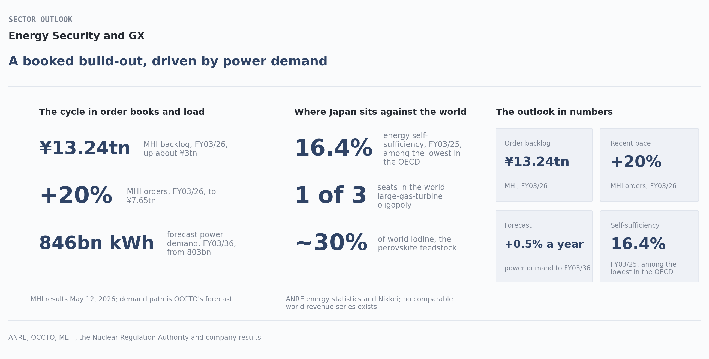
Japan’s position is uneven. It has the world’s fifth-largest solar fleet but imports panels from China. At June 30, 2026, of 33 nuclear units, 11 were operating and 22 were shut; 18 of the shut units had never cleared the post-Fukushima regime. Japan is genuinely strong in large gas turbines, where Mitsubishi Heavy competes in a three-company global oligopoly with GE Vernova and Siemens Energy. In small modular reactors, Japanese companies are expected component suppliers to US-owned designs rather than platform owners.
The roadmap assigns ¥24.6tn through FY03/41: ¥6.2tn to hydrogen and ammonia, ¥5.1tn to offshore wind, ¥5.0tn to next-generation reactors, ¥4.1tn to perovskite solar, ¥3.2tn to green chemicals, and ¥1.0tn to geothermal. The broader GX program targets more than ¥150tn over ten years against ¥20tn of authorized transition bonds—roughly ¥1 of public borrowing for every ¥7.5 of ambition. From FY03/27, large emitters must cover emissions with allowances. The 2024 hydrogen law can pay approved producers the gap between a reference price and the market price.
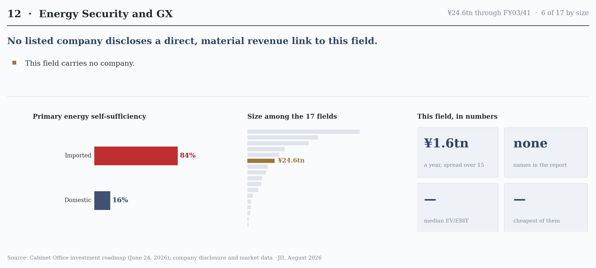
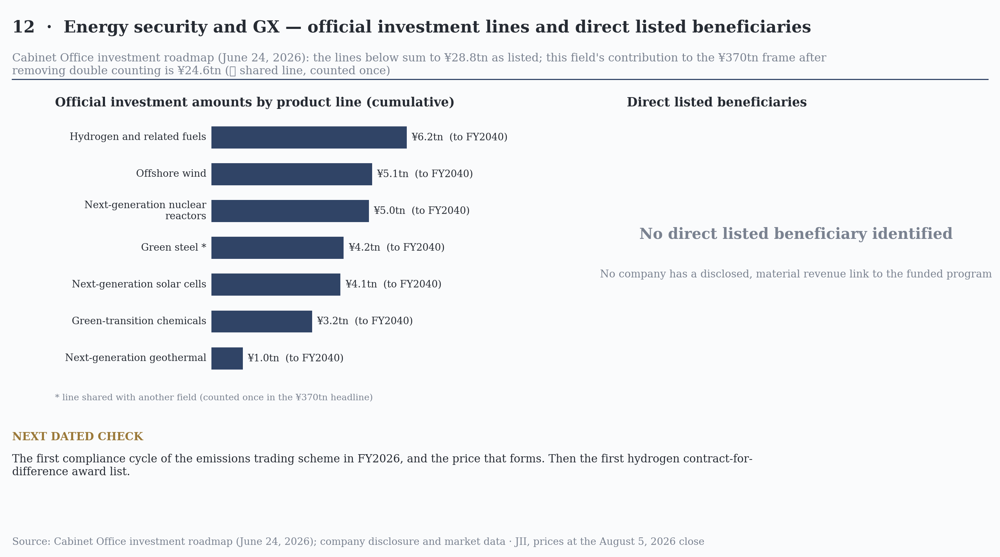
Watch the first emissions-compliance period and carbon price, the first hydrogen awards, and perovskite investment decisions expected around 2027. The demand is domestic; much of the listed profit capture is not.
Fusion Energy
Fusion has no electricity revenue, but private capital is compounding rapidly and Japanese factories supply critical hardware. The opportunity is global; the listed-company disclosure needed to value it does not yet exist.
Fusion has no operating revenue from electricity. No private machine has yet produced more fusion energy than the energy required to initiate and sustain the reaction. The Fusion Industry Association therefore tracks capital: US$14.24bn across 56 companies by July 13, 2026, up from roughly US$2bn across 23 companies in 2021. After two weaker years, funding rose to a record US$4.48bn in the twelve months to July 2026.
Two developments are pulling capital forward. AI data centers create a prospective buyer for round-the-clock power; Google signed a conditional agreement on June 30, 2025 to buy 200MW from Commonwealth Fusion Systems, although Google is also an investor and the contract depends on SPARC achieving net energy. Compact reactors also require large quantities of rare-earth barium copper oxide (REBCO) superconducting tape; the UK STEP prototype alone is expected to use 30,000km.
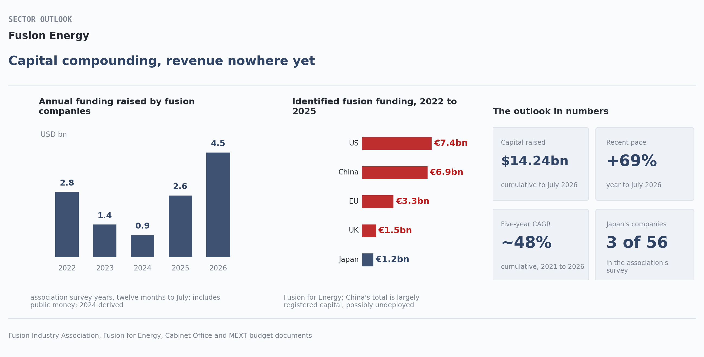
Japan’s strength is manufacturing, not venture funding. All five companies with more than US$1bn of capital are American. Four Japanese start-ups have disclosed roughly US$310mn combined, while Commonwealth Fusion Systems alone reached US$4.0bn on July 30, 2026. ITER, the international fusion reactor being built in France, has 19 toroidal-field coils, and Japanese factories built nine of them, and they are contracted for all 58 divertor outer vertical targets, including 38 at Mitsubishi Heavy. Fujikura is one of four manufacturers using the relevant deposition method for REBCO tape; together they supply more than half the world market.
The roadmap assigns ¥3.1tn through FY03/41 and frames it as the estimated cost of one demonstration plant, not the size of an industry. The June 2025 strategy targets a world-first demonstration in the 2030s, while the licensing regime remains undecided. Main-budget fusion funding was ¥20.7bn in FY03/26 and ¥20.8bn in the FY03/27 draft, below the ¥30.9bn request. The pattern still depends on annual budgets rather than commercial electricity revenue.
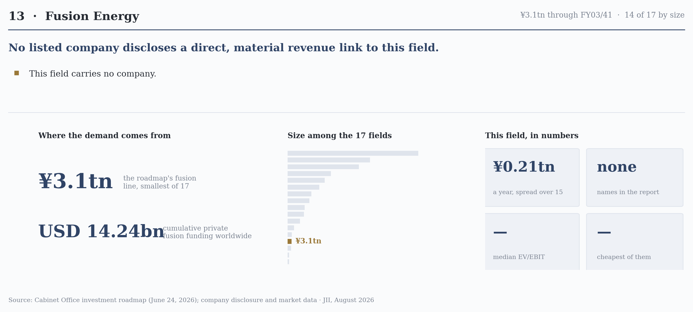
The investable signal would be an ITER-scale component award disclosed in a listed supplier’s backlog. No company currently separates fusion work, so investors cannot follow an order into revenue or operating profit. Private financing rounds are not accessible through listed shares.
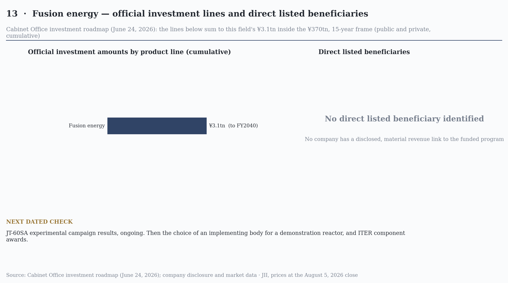
The view changes when Japan names the organization responsible for its demonstration reactor, when suppliers disclose further ITER-class awards, or when 2026 private-machine tests produce decisive experimental results. The ¥3.1tn domestic roadmap is too small and too diffuse to move a large supplier on its own.
Disaster Resilience
Japan has legally committed roughly ¥20tn to strengthen aging infrastructure. Construction inflation and labor scarcity can absorb the budget increase, so margin expansion matters more than order volume.
Nominal construction is growing, real volume is not. MLIT estimated FY03/26 investment at ¥75.57tn, including ¥25.21tn of government work. The cost deflator rose 18.9% from FY03/21 to FY03/25 while nominal investment rose 16.7%, implying a 1.8% decline in physical work. Public construction fell 11.5% in real terms over the same period. The Research Institute of Construction and Economy (RICE)’s July 27, 2026 forecast reaches ¥86.35tn in FY03/28, with public real volume up 2.8% in FY03/27 and down 0.1% the following year.
Demand is unavoidable and dateable. In March 2023, 37% of roughly 730,000 road bridges were more than 50 years old; the share is projected to reach 75% by 2040. Sewer pipes older than 50 years rise from 7% to 34%. The January 2025 Yashio road collapse triggered a priority survey of about 5,000km of large aging sewer mains, with 100% required to be verified or repaired by FY03/31.
Maintenance now represents 31.0% of completed prime-contract work, up from 21.5% in FY03/03. Labor is the bottleneck: employment has fallen to 4.78mn from 6.85mn in 1997, and overtime limits in force since April 2024 further restrict output even when budgets and orders exist.
The roadmap’s ¥2.6tn resilience line through FY03/31 understates the binding commitment. A statutory five-year fortification plan approved June 6, 2025 allocates roughly ¥20tn or more across FY03/27–FY03/31 and 114 measures, including about ¥10.6tn for the transport, communications and energy lifelines, a bucket led by roads, railways, airports and ports. A Disaster Management Agency is due in FY03/27. Yet the general-account public-works budget has remained near ¥6.1tn since FY03/22, and roughly ¥4tn a year is only about 5% of the overall construction market. The plan stabilizes real volume; it does not create an industry boom.
The investable variable is bid margin. The plan determines how much work will be tendered, but competition determines who keeps the economics. The first useful signal is a contractor reporting higher segment margins on the specific bridges, dams, or pipes named in prefectural schedules. Labor scarcity should support pricing, but reported margins have not yet confirmed it.
Watch the FY03/27 creation of the Disaster Management Agency, fortification lines in the FY03/28 budget request, and prefectural lists of named structures. Until a listed builder converts the guaranteed workload into rising margin, the case rests on secured volume rather than on widening margin.
UPSIDE
- Two-thirds of revenue comes from municipal water assets, which need replacing whether budgets rise or not.
- The segment backlog of ¥271.5bn is 2.75 years of segment revenue.
- Group operating profit is guided up 11.8% to ¥11.0bn.
RISKS
- Water Environment order intake fell 31.6% in FY03/26 and the backlog fell 1.8%.
- The year's growth came from the private industrial segment, not the government one.
- Large plants carry execution risk, and municipal awards move between years.
UPSIDE
- 86.2% of revenue comes from national-government-related bodies and local government, with the ministry that runs the resilience plan named first.
- The company itself names the resilience plan as its demand driver.
- Net cash is 41% of market value, and operating profit is guided up 6.7%.
RISKS
- Group operating profit fell 2.1% in FY12/25 and revenue grew only 1.3%.
- Specialist staff are hard to hire, which caps how fast the work can grow.
- Competitive bidding can compress margins even when volume rises.
UPSIDE
- A ministry and three expressway companies are named customers of a segment that is almost the whole group.
- The resilience plan funds bridge and tunnel repair more directly than any other kind of work.
- Operating margin was 22.9% in FY06/25, the highest of the twelve.
RISKS
- The company cut guidance in February 2026, after the resilience plan had been decided.
- Current guidance implies 0.3% revenue growth and 1.0% operating profit growth.
- Skilled-labor shortages cap how much work can be done, and at 11.2x only three of the twelve are dearer.
Port & Coastal Infrastructure
Two different pots of public money are called ports. The ¥1.2tn roadmap line buys cranes and software. The ¥246.6bn annual construction budget buys quay walls and dredging, and that is the one that pays contractors.
Separating those two pots is the whole of this section, because a reader who merges them will attach the wrong companies to the wrong money.
The first pot is the roadmap line. The government assigns ¥1.2tn to ports and logistics through FY03/41: ¥0.4tn for cargo-handling machinery, ¥0.6tn for next-generation warehouses, and ¥0.2tn for Cyber Port, which digitizes port paperwork. Spread evenly that is about ¥80bn a year, against the fifteen-industry logistics market that Yano Research restated at ¥24,794.0bn for FY03/25 on August 5, 2026. It is too small to change the economics of that industry on its own, and what it buys is equipment and software rather than construction.
No company in this report is attached to that ¥1.2tn. Buying cranes would mean a cargo-handling equipment maker, and the largest supplier of ship-to-shore cranes is China’s Shanghai Zhenhua Heavy Industries (ZPMC), whose share of that market is widely cited at roughly 70%, a figure carried in a September 2024 report by two United States House committees, which sources it in turn to newspaper reporting. Buying warehouses would mean a developer or a terminal operator. Neither is a marine contractor. This report found no listed Japanese company with a disclosed, material revenue link to that line.
The second pot is the port construction budget, and it is the one that reaches the two companies below. The Ministry of Land, Infrastructure, Transport and Tourism received ¥246.6bn of national funds for port improvement works in the FY03/27 budget, plus ¥15.3bn for port coastal works. Those are national-funding figures. In April 2026 the ministry allocated ¥253.5bn to the two lines on the project-cost basis, which counts local and other contributions alongside the national share. That figure is lower than the ¥261.9bn of national funds above because the April allocation excludes loans, capital contributions, survey and works-administration costs, so the two are different measures rather than a wider and a narrower cut of the same thing. A further ¥90.0bn of national funds had already arrived through the FY03/26 supplementary budget, ¥80.6bn of it for port improvement works and ¥9.4bn for port coastal works.
What that budget buys is written into its own line items. Disaster prevention and national resilience accounts for ¥126.1bn, just under half of the ¥261.9bn the two lines carry together: earthquake-resistant berths, breakwaters built to a resilient design, seawall work against storm surge and tsunami, and preventive maintenance of structures already standing. A further ¥66.6bn strengthens the designated international container strategic ports, and ¥11.9bn goes to domestic ferry and roll-on roll-off terminals.
One more line matters for a specific reason. On the project-cost basis, ¥53.4bn is carried in the ministry’s own footnote as public infrastructure serving the comprehensive defense posture. It is the line that matches the ¥84.7bn of Ministry of Defense revenue that Penta-Ocean Construction disclosed for the year to March 2026, and it is why a marine contractor can carry a defense customer without building anything military.
There is a problem with reading any of this as growth, and it belongs before the companies rather than after them. The initial budget is flat. Port improvement works came in at 1.00 times the prior year in FY03/27, and at 1.00 times again in FY03/26. All of the growth of the past two years arrived through supplementary budgets, which added ¥92.9bn in FY03/25 and ¥80.6bn in FY03/26. The ministry published a ratio of 1.38 times for the earlier of those two years, comparing the FY03/25 supplementary plus the FY03/26 initial budget against the FY03/25 initial budget. The port bureau’s budget document publishes no such ratio for the current year; the same calculation on the port improvement line gives 1.33 times.
Honebuto 2026 says to stop doing that. It calls for breaking the dependence on supplementary budgets, and for moving standing programmes into the initial budget instead. So the mechanism that has delivered all of the growth is the mechanism the policy document says to stop using. Its replacement is a newly created allocation called the Strong and Prosperous Japan investment frame, and the government has not published a size for it.
Behind the annual budget sits a five-year commitment. The First National Resilience Implementation Medium-Term Plan was decided by cabinet on June 6, 2025. It runs from FY03/27 to FY03/31 and designates 114 of its 326 measures as requiring particular promotion, at a stated project scale of roughly ¥20tn or more. Port and coastal items are named within it: earthquake-resistant berths, seismic strengthening of port access roads, resilient-design breakwaters, and climate adaptation through a new statutory co-protection framework. The plan publishes no port-only share, so no slice of that ¥20tn can be attributed to ports.
Watch the ministry budget requests at the end of August, which are the first test of whether port works move from supplementary funding into the initial budget; the size and contents of any autumn supplementary budget; and whether the Strong and Prosperous Japan investment frame is ever given a published figure.
UPSIDE
- Two Japanese ministries are named customers, together a quarter of revenue.
- The Ministry of Defense line connects to the ¥53.4bn of the FY03/27 port budget set aside for defense-related port infrastructure.
- Domestic civil engineering orders rose 37.9% in FY03/26 to ¥340.6bn.
RISKS
- Net debt is ¥124.4bn, and ¥9.9bn of it is commercial paper, whose balance swung between ¥9.9bn and ¥89.8bn during FY03/26.
- Overseas work is now large enough to carry its own execution and collection risk.
- Construction cash flow swings with the timing of large projects.
UPSIDE
- A single ministry supplies 19.6% of group revenue, and it is the only customer above the disclosure threshold.
- Net cash of ¥24.2bn is 15% of market value.
- FY03/26 operating profit was a record.
RISKS
- FY03/27 operating profit is guided down 12.8% off that record.
- Overseas work rose to 26% of revenue from 20%, which adds a different kind of risk.
- Large projects face cost inflation between tender and completion.
FoodTech
Japan's food market is reaching nominal records on higher prices while household volume declines. Most projected investment goes to plant factories and land-based aquaculture, where commercial economics remain unproven.
The Ministry of Agriculture, Forestry and Fisheries (MAFF)’s gross-output measure puts Japan’s food industry at a record ¥105.8tn in CY2023, with a ten-year CAGR near 1.6%. The measure counts the same food at multiple stages from farm to restaurant, and the record reflects tourism and price increases rather than higher consumption. MAFF projects 2040 household food spending at index 98 versus 100 in 2015; fresh food falls to 75, processed food rises to 111, and per-capita spending rises to 116.
No official market-size series exists for FoodTech itself. Three forces shape demand. Food self-sufficiency remains low: domestic production supplied 38% of calories in FY03/25. Labor scarcity is driving food-machinery sales, which reached a record in CY2024 after three annual increases from ¥590.05bn in CY2022. Exports are the growth outlet: agri-food exports reached ¥1,507.1bn in CY2024, with processed food compounding at about 9.3% since 2020.
The roadmap puts most capital into a model with weak economics. Japan had 432 plant factories at FY03/24-end, including 195 fully artificial-light sites. Only 43% of those sites broke even, versus 73% of sunlight-assisted greenhouses. Electricity consumes 20–35% of sales, and 65% of output is undifferentiated lettuce or baby leaf. The loss-making share improved only from 58.3% in 2017 to about 57% despite cheaper LEDs. Land-based aquaculture is earlier: registrations rose from 662 in January 2024 to 808 in January 2026, but mandatory notification distorts the comparison. New salmon facilities have not yet reported a full stocking-to-harvest cycle.
The roadmap assigns ¥9.7tn through FY03/41: ¥4.6tn to plant factories, ¥2.9tn to land-based aquaculture, ¥1.2tn to food machinery, and ¥1.0tn to new foods. It assumes 37x growth in plant-factory output and 89x in land-based aquaculture but names no buyer. Government can certify products, support exports, and facilitate financing; it does not buy the output. Commercial success still depends on price versus field-grown vegetables and imported fish.
Watch named MAFF grant recipients, the first full harvest economics from large land-based fish farms, and progress toward the ¥5tn 2030 agri-food export target. The ¥9.7tn remains projected demand, not committed public spending.
Content & Intellectual Property
Overseas demand for Japanese content is compounding, but foreign platforms and licensees retain more than 40% of consumer spending. The opportunity is higher monetization of existing IP, not government-created demand.
Consumers outside Japan spent ¥5.8tn on Japanese content in CY2023, up from ¥4.7tn in CY2022 and roughly three times the level a decade earlier. Anime industry revenue reached a record ¥3,840.7bn in CY2024, up 14.8%, with overseas sales of ¥2,170.2bn—56.5% of the total and above domestic sales for the first time. Studios that produced the shows billed only ¥362.1bn. Manga reached a seventh consecutive record at ¥704.3bn.
Currency flatters some of the growth. The ¥31.0tn global games market rose 5.0% in yen but fell 2.6% after exchange-rate effects. The government’s ¥20tn overseas-sales target for 2033 requires roughly 13.2% annual growth for a decade, far above the 5% global market growth cited by METI. Meeting it requires Japan to take substantial share, and no independent forecast in the source supports that path.
Demand is carried by global streaming and manga-derived franchises. Netflix reported more than 6.1bn hours of viewing for Japanese titles in the first half of CY2026. Digital manga is ¥512.2bn, 73% of the total manga market, and provides source material for much of the anime pipeline. METI nevertheless notes that overseas anime popularity is not converting proportionately into manga sales.
Monetization is the central leak. METI estimates that just under 60% of overseas spending returns to Japanese companies. More than 40% remains with foreign platforms, distributors, and local licensees.
Production capacity is constrained at roughly 300 anime titles a year and declining because the industry lacks animators. Generative AI also competes directly with Japan’s strength in 2D styles. The roadmap assigns ¥33.7tn through FY03/34, including ¥24.5tn for games, but none is appropriated. The concrete policy instrument is the smartphone software-competition law, which came into full force on December 18, 2025 and requires major platforms to permit alternative app stores and payment systems. The law can shift platform fees to publishers without requiring additional consumer spending, but the overseas growth predates the policy.
The investor takeaway
This report reviewed twelve companies. In each one, public money is a large enough share of revenue to matter, and in seven of them the company’s own filing names the public body that pays it. Three of the twelve are also cheap, and are placed where the funded money is still arriving rather than already spent. Those three are set out below, and nothing else is.
The test was the same for each. The company’s own filing must name a public body as a customer, with a yen amount attached. The money must belong to a programme that is funded and running now. And the shares must be cheap against the operating profit the company itself currently guides, before any new government money arrives.
1 · 9768 IDEA Consultants — the highest public revenue share of the twelve
IDEA Consultants is a survey and design house. Public bodies commission it to measure a site, assess an environment and design the work that follows. In the year to December 2025, national-government-related bodies supplied 68.3% of its revenue and local government a further 17.9%. That is 86.2% of revenue from public bodies, and it is the highest share of the twelve companies reviewed.
The company names the Ministry of Land, Infrastructure, Transport and Tourism first among its national customers, ahead of the Ministry of Defense. It wins more than four-fifths of its orders, measured on the parent company, through formats that weigh technical proposals rather than price alone. And in its own market commentary it names the First National Resilience Implementation Medium-Term Plan as the source of its demand. That last point matters: the link to the funded programme is the company’s own assertion, not this report’s inference.
The plan it names runs from FY03/27 to FY03/31 and commits roughly ¥20tn or more across 114 measures. It began this fiscal year, so the money sits ahead of the company rather than behind it.
At the August 5, 2026 close the shares traded at 4.5x forward EV/EBIT. Only Uchida Yoko, at 4.3x, is cheaper, and it fails the first test. Net cash of ¥10.5bn is 41% of market value.
Against that: operating profit fell 2.1% in the year to December 2025 and revenue grew 1.3%. Management guides operating profit up 6.7% this year. Specialist staff are hard to hire, and that caps how fast survey and design work can grow however large the budget becomes.
2 · 1893 Penta-Ocean Construction — two ministries, a quarter of revenue
Penta-Ocean Construction is Japan’s largest marine civil engineering contractor. It builds quay walls, dredges harbors and reclaims land.
Its annual report for the year to March 2026 names three customers above the 10% disclosure threshold. Two of the three are Japanese government bodies: the transport ministry at ¥119.4bn and the defense ministry at ¥84.7bn, ¥204.1bn together and 25.7% of revenue. The third is the Singapore Government, at ¥90.2bn.
Two separate budget lines pay this company. The port improvement budget for FY03/27 is ¥246.6bn of national funds, and the port coastal budget a further ¥15.3bn. Resilience work accounts for ¥126.1bn of those two lines together. On the wider project-cost basis, ¥53.4bn is set aside for port infrastructure serving the defense posture, and that is the line matching the Ministry of Defense revenue above.
At the August 5, 2026 close the shares traded at 9.3x forward EV/EBIT. That is above the median of 8.9x for the twelve, so this is the one pick that is not cheap against its own peer group; it earns its place on the strength of the disclosure and on two budget lines rather than on price. Operating profit is guided up 6.7% to ¥59.0bn, and domestic civil engineering orders rose 37.9% last year to ¥340.6bn.
Against that, and it is the same objection the port section raises: the initial port budget has been flat at 1.00 times the prior year for two years running, and all of the growth has come through supplementary budgets that Honebuto 2026 says to stop relying on. Net debt is ¥124.4bn, and ¥9.9bn of that is commercial paper, whose balance moved between ¥9.9bn and ¥89.8bn during the last fiscal year. Overseas work now carries its own execution and collection risk, and the Singapore Government line is a reminder that a large part of the disclosed customer revenue is not Japanese public money at all.
3 · 1885 Toa Corporation — one ministry, a fifth of all revenue
Toa Corporation is the smaller of the two marine contractors here, and the more concentrated. It does the same work as Penta-Ocean — harbor construction and dredging — with less of it overseas and one customer that dominates the rest.
The Ministry of Land, Infrastructure, Transport and Tourism is its only customer above the 10% disclosure threshold, at ¥70.3bn in the year to March 2026, which is 19.6% of group revenue. The disclosure books the ministry’s work across domestic civil engineering and an Other bucket, which together produced ¥172.1bn, or 48.0% of the group. Domestic civil engineering alone was ¥156.0bn, or 43.5%. The order backlog for domestic public civil works was ¥145.3bn at March 31, 2026.
At the August 5, 2026 close the shares traded at 6.7x forward EV/EBIT. Net cash of ¥24.2bn is 15% of market value.
Against that, and this is the sharpest counterpoint of the three: operating profit reached a record ¥24.2bn in the year to March 2026, up 17.3%, and management guides the current year down 12.8% to ¥21.1bn. Anyone buying this company for rising government spending is buying it in a year its own management expects profit to fall.
That gap is the report’s argument in one company. The spending has been committed. The earnings have not yet followed.
Disclaimer. Japan Investor Interface Co., Ltd. provides investor-relations consulting and is not registered as an investment adviser or Financial Instruments Business Operator. This report is research, not a recommendation or solicitation to buy, sell, or hold any security. Naming a company is not a recommendation to invest in it. Figures may be incomplete or out of date. Consult primary disclosures and a licensed adviser before making an investment decision.